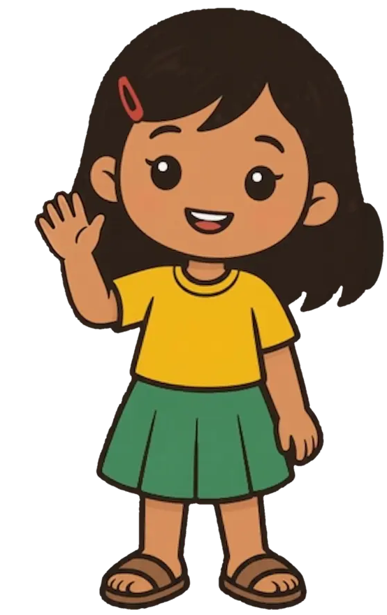
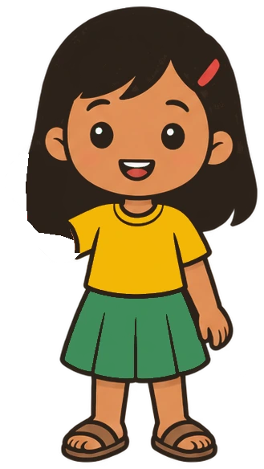
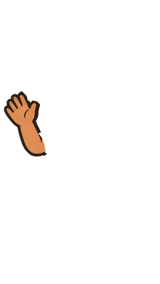
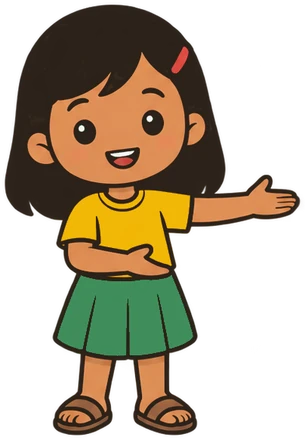
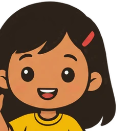

<!DOCTYPE html>
<html lang="id">
<head>
<meta charset="utf-8">
<meta name="viewport" content="width=device-width, initial-scale=1, viewport-fit=cover">
<title>Rumahku, Bagian dan Fungsinya</title>
<meta name="description" content="Game media pembelajaran Pendidikan Pancasila Fase A: bantu Bina mengembalikan warna rumahnya lewat lima misi.">
<link rel="preconnect" href="https://fonts.googleapis.com">
<link rel="preconnect" href="https://fonts.gstatic.com" crossorigin>
<link rel="stylesheet" href="https://fonts.googleapis.com/css2?family=Bricolage+Grotesque:opsz,wght@12..96,500;12..96,700;12..96,800&family=Space+Mono:wght@700&display=swap">
<style>
/* Tata letak: panel Bina tetap di kiri (kuning), panggung permainan di kanan (putih).
   Dua tinta saja untuk antarmuka: tinta + kuning. Warna penuh hanya milik gambar, dan itu hadiahnya. */
:root{
  --tinta:#22180F;
  --tinta-2:#4A3A2A;
  --kuning:#F2B705;
  --kuning-tipis:#FFF0BF;
  --kertas:#FFFFFF;
  --langit:#BFE4F4;
  --langit-titik:#9FD2E9;
  --rumput:#4FA86B;
  --rumput-tua:#2F7A4C;
  --garis:4px;
  --bayang:6px 6px 0 var(--tinta);
  --bayang-kecil:4px 4px 0 var(--tinta);
  --huruf:"Bricolage Grotesque","Trebuchet MS","Segoe UI",system-ui,sans-serif;
  --angka:"Space Mono",ui-monospace,"Courier New",monospace;
  --mikro:150ms;
  --sedang:280ms;
  --masuk:520ms;
  --panel:clamp(250px,24vw,340px);
  color-scheme:light;
}
*{box-sizing:border-box}
[hidden]{display:none !important}
html,body{height:100%}
@supports (height:100dvh){html{height:100dvh}}
body{margin:0;background:var(--langit);color:var(--tinta);font:500 18px/1.45 var(--huruf);-webkit-tap-highlight-color:transparent}
img{max-width:100%;display:block;-webkit-user-drag:none;user-select:none;-webkit-user-select:none}
button{font:inherit;color:inherit}
h1,h2,h3{margin:0;font-weight:800;line-height:1.02;letter-spacing:-.02em;text-wrap:balance}
p{margin:0}
:focus-visible{outline:4px dashed var(--tinta);outline-offset:4px}
.sr{position:absolute;width:1px;height:1px;overflow:hidden;clip:rect(0 0 0 0);white-space:nowrap}
.duotone{filter:url(#duotone)}

/* ---------- layar pembuka ---------- */
.pembuka{
  position:fixed;inset:0;z-index:60;overflow:hidden;
  background-color:var(--langit);background-image:radial-gradient(circle,var(--langit-titik) 1.7px,transparent 2.1px);background-size:24px 24px;
  padding-top:env(safe-area-inset-top,0px);
}
.pb-isi{
  position:relative;height:100%;display:grid;
  grid-template-columns:minmax(0,1fr) minmax(0,1.15fr);
  grid-template-rows:1fr auto auto 1fr clamp(48px,9svh,84px);
  grid-template-areas:"bina ." "bina teks" "bina tombol" "bina ." "tanah tanah";
  column-gap:clamp(16px,4vw,64px);
}
.pb-teks{grid-area:teks;display:flex;flex-direction:column;gap:16px;padding-right:clamp(16px,4vw,56px);min-width:0;position:relative;z-index:2}
.pb-teks .judul-besar{font-size:clamp(38px,5.4vw,108px)}
.pb-teks .logo-baris img{height:clamp(46px,4vw,76px)}
.pb-mapel{font-weight:800;font-size:clamp(18px,1.6vw,30px);background:var(--kertas);border:3px solid var(--tinta);padding:4px 12px;align-self:flex-start}
.pb-tombol{grid-area:tombol;padding:26px clamp(16px,4vw,56px) 0 0;position:relative;z-index:3}
.pembuka .pb-mulai{font-size:clamp(24px,2.3vw,42px);min-height:clamp(76px,8svh,100px);padding:14px clamp(40px,3vw,60px);gap:14px}
.pembuka .pb-mulai svg{width:1.1em;height:1.1em}
.pb-bina{grid-area:bina;position:relative;min-height:0;display:flex;align-items:flex-end;justify-content:center;padding-top:clamp(16px,4svh,48px);z-index:1}
.pb-tokoh{position:relative;height:min(100%,880px);aspect-ratio:329/584}
.pb-tokoh .lambai{height:100%;transform-origin:50% 100%}
/* Animasi Bina sedikit lebih lebar dari kotaknya: ujung jari dan rambut keluar di kiri-kanan.
   Kotaknya tetap 329/584 supaya Bina terbang pas ke panel kiri saat Mulai diketuk. */
.pb-tokoh .lambai .gerak{left:-5.84%;width:111.68%}
.pb-matahari{
  position:absolute;left:50%;top:-5%;width:138%;aspect-ratio:1;transform:translateX(-50%);
  background:var(--kuning);border:var(--garis) solid var(--tinta);border-radius:50%;box-shadow:10px 10px 0 var(--tinta);
}
.pb-sapa{
  position:absolute;z-index:2;left:74%;top:-2%;
  background:var(--kertas);border:var(--garis) solid var(--tinta);border-radius:18px;box-shadow:var(--bayang-kecil);
  padding:8px 14px;font-weight:800;font-size:clamp(18px,1.8vw,26px);line-height:1.15;white-space:nowrap;
}
.pb-sapa::after{content:"";position:absolute;left:18px;bottom:-16px;width:22px;height:16px;background:var(--tinta);clip-path:polygon(0 0,100% 0,0 100%)}
.pb-sapa::before{content:"";position:absolute;left:22px;bottom:-9px;width:14px;height:10px;background:var(--kertas);clip-path:polygon(0 0,100% 0,0 100%);z-index:1}
.pb-tanah{grid-area:tanah;background:var(--rumput);border-top:var(--garis) solid var(--tinta);position:relative;
  background-image:linear-gradient(90deg,var(--rumput-tua) 0 6px,transparent 6px);background-size:46px 100%}
.pb-awan{position:absolute;z-index:0;height:clamp(34px,5svh,52px);background:var(--kertas);border:var(--garis) solid var(--tinta);border-radius:999px;will-change:transform}
.pb-awan::before{content:"";position:absolute;left:22%;bottom:40%;width:42%;height:130%;background:var(--kertas);border:var(--garis) solid var(--tinta);border-bottom:0;border-radius:999px 999px 0 0}
.pb-awan-1{width:clamp(120px,14vw,220px);top:4svh;left:58%;animation:awan 50s linear infinite}
.pb-awan-2{width:clamp(90px,10vw,160px);top:15svh;left:96%;animation:awan 70s linear infinite}
@keyframes awan{from{transform:translateX(0)}to{transform:translateX(-120vw)}}
.pb-masuk .pb-tokoh .lambai{animation:pb-naik .7s cubic-bezier(.2,1.4,.4,1) both}
.pb-masuk .pb-matahari{animation:pb-terbit .6s cubic-bezier(.2,1.3,.4,1) both}
.pb-masuk .pb-sapa{animation:pb-pop .4s cubic-bezier(.2,1.6,.4,1) .55s both}
.pb-masuk .pb-teks,.pb-masuk .pb-tombol{animation:pb-turun .5s ease-out .2s both}
@keyframes pb-naik{from{transform:translateY(60%)}to{transform:none}}
@keyframes pb-terbit{from{transform:translateX(-50%) scale(.3)}to{transform:translateX(-50%) scale(1)}}
@keyframes pb-pop{from{transform:scale(0);transform-origin:0 100%}to{transform:none}}
@keyframes pb-turun{from{opacity:0;transform:translateY(-18px)}to{opacity:1;transform:none}}
.pembuka.keluar{pointer-events:none}
.pembuka.keluar > .pb-isi > :not(.pb-bina),.pembuka.keluar .pb-matahari,.pembuka.keluar .pb-sapa,.pembuka.keluar .pb-awan{opacity:0;transition:opacity .3s}
.pembuka.keluar{background-color:transparent;background-image:none;transition:background-color .35s}
.pembuka.geser{transform:translateY(-104%);transition:transform .45s cubic-bezier(.6,0,.4,1)}
.pembuka.pudar{opacity:0;transition:opacity .2s}
@media (max-aspect-ratio:4/5), (max-width:700px){
  .pb-isi{
    grid-template-columns:minmax(0,1fr);
    grid-template-rows:auto minmax(0,1fr) clamp(108px,17svh,150px);
    grid-template-areas:"teks" "bina" "tanah";
  }
  .pb-teks{padding:clamp(14px,3svh,28px) 16px 0;gap:10px}
  .pb-teks .judul-besar{font-size:clamp(30px,9.4vw,58px)}
  .pb-teks .logo-baris img{height:38px}
  .pb-mapel{font-size:16px}
  .pb-bina{padding-top:12px}
  .pb-sapa{left:auto;right:-14%;top:1%;font-size:18px}
  .pb-tombol{grid-area:tanah;align-self:center;justify-self:center;padding:0}
  .pb-mulai{min-width:min(78vw,340px)}
  .pb-awan-1{top:14px;left:64%;width:110px;height:34px}
  .pb-awan-2{display:none}
}
@media (max-height:520px) and (min-aspect-ratio:4/5){
  .pb-teks{gap:8px}
  .pb-teks .judul-besar{font-size:clamp(28px,4.4vw,52px)}
  .pb-teks .logo-baris img{height:32px}
  .pb-tombol{padding-top:14px}
  .pb-mulai{min-height:60px;font-size:22px}
}

/* ---------- rangka aplikasi ---------- */
.aplikasi{
  height:100%;display:grid;
  grid-template-columns:var(--panel) minmax(0,1fr);
  grid-template-rows:minmax(0,1fr) auto;
  grid-template-areas:"pemandu panggung" "kendali panggung";
}
.pemandu{
  grid-area:pemandu;background:var(--kuning);border-right:var(--garis) solid var(--tinta);
  display:flex;flex-direction:column;padding:18px 18px 0;min-height:0;overflow:hidden;
}
.gelembung{
  position:relative;background:var(--kertas);border:var(--garis) solid var(--tinta);
  border-radius:22px;padding:14px 16px 12px;box-shadow:var(--bayang-kecil);
  display:flex;flex-direction:column;gap:8px;flex:0 0 auto;min-height:0;max-height:58%;
}
.gelembung-teks{font-weight:700;font-size:20px;line-height:1.35;overflow-y:auto;min-height:0}
.gelembung-bawah{display:flex;justify-content:flex-end}
.dengar{
  display:inline-flex;align-items:center;gap:6px;min-height:44px;padding:6px 12px;
  background:var(--kuning);border:3px solid var(--tinta);cursor:pointer;font-weight:800;font-size:16px;
}
.dengar svg{width:22px;height:22px}
.ekor{width:34px;height:22px;margin-left:46px;margin-top:-4px;flex:0 0 auto}
.bina-wadah{flex:1 1 0;min-height:0;display:flex;align-items:flex-end;justify-content:center;padding-top:6px}
.bina-pose{height:100%;max-height:430px;max-width:92%;width:auto;object-fit:contain;object-position:50% 100%;transform-origin:50% 100%;animation:melayang 3.6s ease-in-out infinite}
.bina-pose.ganti{animation:muncul var(--sedang) ease-out, melayang 3.6s ease-in-out var(--sedang) infinite}
.bina-kepala{display:none}
.lambai{position:relative;aspect-ratio:329/584;height:100%;width:auto;max-width:100%}
.lambai img{position:absolute;inset:0;width:100%;height:100%;max-width:none}
.lambai .lengan{transform-origin:26.75% 51.37%;animation:lambai 3.2s ease-in-out infinite}
@keyframes lambai{
  0%{transform:rotate(0)} 7%{transform:rotate(12deg)} 15%{transform:rotate(-8deg)}
  23%{transform:rotate(12deg)} 31%{transform:rotate(-8deg)} 39%{transform:rotate(10deg)}
  48%,100%{transform:rotate(0)}
}
.bina-wadah .lambai{height:100%;max-height:430px;animation:melayang 3.6s ease-in-out infinite;transform-origin:50% 100%}
@keyframes melayang{0%,100%{transform:translateY(0)}50%{transform:translateY(-6px)}}
@keyframes muncul{from{transform:scale(.94) translateY(8px)}to{transform:none}}
.kendali{
  grid-area:kendali;background:var(--kuning);border-right:var(--garis) solid var(--tinta);
  padding:12px 18px 18px;
}
.kendali-isi{display:flex;flex-wrap:wrap;gap:10px;justify-content:center;max-width:190px;margin:0 auto}
.ikon-btn{
  width:56px;height:56px;display:grid;place-items:center;background:var(--kertas);
  border:var(--garis) solid var(--tinta);box-shadow:var(--bayang-kecil);cursor:pointer;padding:0;
  transition:transform var(--mikro),box-shadow var(--mikro);
}
.ikon-btn svg{width:28px;height:28px}
.ikon-btn:hover{transform:translate(-2px,-2px);box-shadow:6px 6px 0 var(--tinta)}
.ikon-btn:active{transform:translate(4px,4px);box-shadow:0 0 0 var(--tinta)}
.ikon-btn[aria-pressed="false"]{background:var(--tinta);color:var(--kertas)}
#panggung{grid-area:panggung;overflow-y:auto;overflow-x:hidden;padding:clamp(16px,2.4vw,34px);position:relative;min-width:0;container:panggung / inline-size;
  background-color:var(--langit);background-image:radial-gradient(circle,var(--langit-titik) 1.7px,transparent 2.1px);background-size:24px 24px;background-attachment:local}
.judul-besar:focus,.judul-layar:focus{outline:none}
.layar{max-width:1440px;margin:0 auto;position:relative}

/* ---------- tombol ---------- */
.btn{
  display:inline-flex;align-items:center;justify-content:center;gap:10px;
  font-weight:800;font-size:20px;line-height:1.1;min-height:56px;padding:12px 22px;
  background:var(--kertas);color:var(--tinta);border:var(--garis) solid var(--tinta);
  box-shadow:var(--bayang-kecil);border-radius:0;cursor:pointer;text-decoration:none;
  transition:transform var(--mikro),box-shadow var(--mikro);
}
.btn svg{width:24px;height:24px;flex:0 0 auto}
.btn:hover{transform:translate(-2px,-2px);box-shadow:6px 6px 0 var(--tinta)}
.btn:active{transform:translate(4px,4px);box-shadow:0 0 0 var(--tinta)}
.btn-utama{background:var(--tinta);color:var(--kertas);box-shadow:6px 6px 0 var(--kuning),6px 6px 0 2px var(--tinta)}
.btn-utama:hover{box-shadow:8px 8px 0 var(--kuning),8px 8px 0 2px var(--tinta)}
.btn-besar{font-size:clamp(20px,2.2vw,26px);min-height:64px;padding:14px 28px}
.btn-kecil{min-height:48px;font-size:17px;padding:8px 14px}
.tautan{
  background:none;border:0;padding:10px 4px;min-height:44px;cursor:pointer;
  font-weight:800;font-size:18px;text-decoration:underline;text-decoration-thickness:3px;text-underline-offset:5px;
}
.tautan:hover{text-decoration-color:var(--kuning)}

/* ---------- HUD tiap layar ---------- */
.hud{display:flex;align-items:center;gap:14px 18px;flex-wrap:wrap;margin-bottom:18px}
.judul-layar{font-size:clamp(28px,3.6vw,46px);flex:1 1 260px;outline:none}
.hitung{
  font-family:var(--angka);font-weight:700;font-size:22px;letter-spacing:-.02em;
  background:var(--tinta);color:var(--kertas);padding:6px 14px;min-width:84px;text-align:center;
  font-variant-numeric:tabular-nums;
}
.hitung:empty{display:none}

/* ---------- beranda ---------- */
.beranda{display:grid;grid-template-columns:minmax(0,1fr) minmax(0,1.3fr);gap:22px 40px;align-items:center}
.beranda-judul{grid-column:1/-1;display:flex;flex-direction:column;gap:12px}
.beranda-teks{display:flex;flex-direction:column;gap:18px;min-width:0}
.logo-baris{display:flex;gap:12px;align-items:center}
.logo-baris img{height:46px;width:auto}
.judul-besar{display:flex;flex-wrap:wrap;align-items:flex-start;gap:10px 0;font-size:clamp(32px,3.95vw,66px);line-height:.95}
.judul-besar span{display:inline-block;padding:6px 14px 10px;border:var(--garis) solid var(--tinta);max-width:100%}
.judul-besar .j1{background:var(--kuning);transform:rotate(-2deg);box-shadow:var(--bayang)}
.judul-besar .j2{background:var(--tinta);color:var(--kertas);margin-left:clamp(10px,1.6vw,22px);margin-top:clamp(14px,1.8vw,26px)}
.identitas{font-weight:700;font-size:19px}
.cerita{font-size:20px;line-height:1.45;max-width:34ch}
.aksi{display:flex;align-items:center;gap:16px 22px;flex-wrap:wrap}
.kemajuan{font-family:var(--angka);font-weight:700;font-size:18px}
.beranda-rumah{margin:0;display:flex;flex-direction:column;gap:12px;min-width:0}
.bingkai{background:var(--kertas);border:var(--garis) solid var(--tinta);box-shadow:8px 8px 0 var(--tinta);padding:10px}
.beranda-rumah figcaption{font-weight:700;font-size:18px}
.ruang-guru{
  grid-column:1/-1;display:flex;flex-wrap:wrap;align-items:center;gap:2px 18px;
  border-top:var(--garis) solid var(--tinta);padding-top:12px;margin-top:4px;
}
.ruang-guru > span{font-weight:800;font-size:18px;margin-right:2px}
.ruang-guru .tautan{font-size:17px}

/* ---------- rumah dan lapisan warna ---------- */
.rumah{position:relative;line-height:0;user-select:none;-webkit-user-select:none}
.rumah > .rumah-dasar{width:100%;height:auto}
.lapis{position:absolute;overflow:hidden;pointer-events:none;clip-path:circle(0% at 50% 50%);transition:clip-path var(--masuk) cubic-bezier(.2,.8,.2,1)}
.lapis.tampil{clip-path:circle(80% at 50% 50%)}
.lapis img{position:absolute;max-width:none;height:auto}
.zona{
  position:absolute;background:transparent;border:3px solid transparent;cursor:pointer;padding:0;
  transition:background var(--mikro),border-color var(--mikro);
}
.zona:hover,.zona:focus-visible{background:rgba(242,183,5,.32);border:4px dashed var(--tinta);outline:none}
.cap{
  position:absolute;right:5px;top:5px;width:28px;height:28px;display:grid;place-items:center;
  background:var(--tinta);color:var(--kuning);border-radius:50%;transform:scale(0);transition:transform var(--sedang);
}
.cap svg{width:18px;height:18px}
.sudah .cap{transform:scale(1)}
.zona.benar{background:rgba(242,183,5,.55);border:4px solid var(--tinta)}
.goyang{animation:goyang .42s}
@keyframes goyang{0%,100%{transform:translateX(0)}20%{transform:translateX(-9px)}40%{transform:translateX(8px)}60%{transform:translateX(-6px)}80%{transform:translateX(4px)}}
.papan-rumah{background:var(--kertas);border:var(--garis) solid var(--tinta);box-shadow:var(--bayang);padding:8px}
.rumah-gulir{overflow-x:auto;overflow-y:hidden}
.rumah-gulir .rumah{max-width:min(100%,calc((100svh - var(--kurang,330px)) * 1.697));margin:0 auto}
.papan-rumah.jelajah{--kurang:250px}
.papan-rumah.tebak{--kurang:370px}
.geser-tanda{display:none;font-size:16px;font-weight:700;margin-top:8px}

/* ---------- kartu petunjuk ---------- */
.kartu-kata{
  background:var(--kuning);border:var(--garis) solid var(--tinta);box-shadow:var(--bayang);
  padding:14px 18px;margin-bottom:18px;display:flex;flex-direction:column;gap:4px;
}
.kartu-kata .siapa{font-weight:700;font-size:18px}
.kartu-kata .kata{font-weight:800;font-size:clamp(22px,2.4vw,30px);line-height:1.2}
.bawah-aksi{display:flex;gap:16px;flex-wrap:wrap;align-items:center;margin-top:20px}

/* ---------- peta misi ---------- */
.peta{position:relative;display:grid;grid-template-columns:repeat(3,minmax(0,1fr));gap:36px 40px;padding:6px 6px 14px}
.peta-jalur{position:absolute;inset:0;width:100%;height:100%;pointer-events:none;overflow:visible}
.stasiun{
  position:relative;z-index:1;display:flex;flex-direction:column;align-items:stretch;gap:8px;text-align:left;
  background:var(--kertas);border:var(--garis) solid var(--tinta);box-shadow:var(--bayang);
  padding:12px 14px 14px;cursor:pointer;min-height:56px;
  transition:transform var(--mikro),box-shadow var(--mikro);
}
.stasiun:hover{transform:translate(-3px,-3px);box-shadow:9px 9px 0 var(--tinta)}
.stasiun:active{transform:translate(5px,5px);box-shadow:0 0 0 var(--tinta)}
.stasiun.selesai{background:var(--kuning-tipis)}
.stasiun-atas{display:flex;justify-content:space-between;align-items:center;gap:8px}
.no{
  font-family:var(--angka);font-weight:700;font-size:24px;width:44px;height:44px;display:grid;place-items:center;
  background:var(--kuning);border:3px solid var(--tinta);
}
.stasiun.selesai .no{background:var(--tinta);color:var(--kuning)}
.stasiun-gambar{height:clamp(84px,14svh,128px);display:flex;align-items:center;justify-content:center}
.stasiun-gambar img{max-height:100%;width:auto}
.stasiun-gambar svg{height:72%;width:auto;max-width:100%}
.stasiun-nama{font-weight:800;font-size:22px;line-height:1.1}
.stasiun-ket{font-size:16px;font-weight:700}
.tag-berikut{
  position:absolute;top:-16px;right:-10px;background:var(--tinta);color:var(--kertas);
  font-weight:800;font-size:16px;padding:4px 10px;transform:rotate(4deg);border:3px solid var(--tinta);
}
.bintang{display:inline-flex;gap:2px}
.bintang svg{width:24px;height:24px}
.hantu-angka{display:none}

/* ---------- butir seret ---------- */
.bisa-seret{touch-action:none;cursor:grab;user-select:none;-webkit-user-select:none}
.bisa-seret.terpilih{background:var(--kuning) !important;transform:translate(-3px,-3px);box-shadow:9px 9px 0 var(--tinta)}
.bisa-seret.sedang-diseret{opacity:.25}
.hantu{position:fixed;z-index:50;pointer-events:none;margin:0;opacity:.95;box-shadow:10px 10px 0 var(--tinta) !important}
.sasaran-aktif{outline:5px solid var(--tinta) !important;outline-offset:2px;background:var(--kuning-tipis) !important}

/* misi 2 */
.kosong{
  position:absolute;display:grid;place-items:center;text-align:center;padding:4px;cursor:pointer;
  background:var(--kertas);border:3px dashed var(--tinta);
  font-weight:800;font-size:clamp(12px,1.25vw,18px);line-height:1.1;color:var(--tinta);
  transition:opacity var(--sedang);
}
.kosong:hover{background:var(--kuning-tipis)}
.kosong.terisi{opacity:0;pointer-events:none}
.baki{display:grid;grid-template-columns:repeat(6,minmax(0,1fr));gap:14px;margin-top:18px}
.butir{
  display:flex;flex-direction:column;align-items:center;gap:6px;padding:8px;
  background:var(--kertas);border:var(--garis) solid var(--tinta);box-shadow:var(--bayang-kecil);min-height:56px;
  transition:transform var(--mikro),box-shadow var(--mikro);
}
.butir img{width:100%;max-width:96px;height:auto}
.butir span{font-weight:800;font-size:17px;line-height:1.1;text-align:center}
.butir.habis{visibility:hidden}
.baki-tugas .butir.habis{display:none}
.baki-kosong{grid-column:1/-1;border:var(--garis) dashed var(--tinta);padding:14px 16px;font-weight:700;font-size:18px}

/* misi 3 */
.kisi-rumah{display:grid;grid-template-columns:repeat(4,minmax(0,1fr));gap:18px}
.kartu-rumah{
  position:relative;display:flex;flex-direction:column;align-items:center;gap:8px;padding:12px;cursor:pointer;
  background:var(--kertas);border:var(--garis) solid var(--tinta);box-shadow:var(--bayang);
  transition:transform var(--mikro),box-shadow var(--mikro);
}
.kartu-rumah:hover{transform:translate(-3px,-3px);box-shadow:9px 9px 0 var(--tinta)}
.kartu-rumah img{width:100%;height:auto;max-height:clamp(110px,30svh,260px);object-fit:contain;transition:filter var(--masuk)}
.kartu-rumah .pemilik{min-height:30px;font-weight:800;font-size:18px}
.kartu-rumah.dapat{background:var(--kuning-tipis);cursor:default}
.kartu-rumah.dapat img{filter:none}
.kartu-rumah.dapat .pemilik{background:var(--tinta);color:var(--kertas);padding:2px 10px}

/* misi 4 */
.baki-tugas{display:grid;grid-template-columns:repeat(6,minmax(0,1fr));gap:12px}
.keluarga{display:grid;grid-template-columns:repeat(4,minmax(0,1fr));gap:16px;margin-top:20px}
.anggota{
  display:flex;flex-direction:column;align-items:center;gap:6px;padding:10px;min-height:250px;cursor:pointer;
  background:var(--kertas);border:var(--garis) solid var(--tinta);box-shadow:var(--bayang);
}
.anggota > img{height:clamp(96px,20svh,180px);width:auto}
.anggota .nama-orang{font-weight:800;font-size:22px}
.jumlah{font-family:var(--angka);font-weight:700;font-size:16px}
.chips{display:flex;flex-direction:column;gap:6px;width:100%}
.chip{
  display:flex;align-items:center;justify-content:space-between;gap:6px;width:100%;min-height:44px;
  background:var(--kuning);border:3px solid var(--tinta);padding:4px 8px;cursor:pointer;
  font-weight:800;font-size:15px;line-height:1.1;text-align:left;
}
.chip svg{width:18px;height:18px;flex:0 0 auto}
.status{margin-top:18px;border:var(--garis) solid var(--tinta);padding:12px 16px;font-weight:700;font-size:19px;background:var(--kertas)}
.status.oke{background:var(--kuning)}

/* misi 5 */
.meja-pilah{display:grid;grid-template-columns:1fr minmax(220px,1.1fr) 1fr;gap:22px;align-items:stretch}
.keranjang{
  display:flex;flex-direction:column;align-items:center;justify-content:flex-start;gap:10px;padding:16px 12px;cursor:pointer;
  border:var(--garis) solid var(--tinta);box-shadow:var(--bayang);min-height:clamp(280px,52svh,440px);text-align:center;
  transition:transform var(--mikro),box-shadow var(--mikro);
}
.keranjang:hover{transform:translate(-3px,-3px);box-shadow:9px 9px 0 var(--tinta)}
.keranjang.jaga{background:var(--kuning)}
.keranjang.rusak{background:var(--tinta);color:var(--kertas)}
.keranjang .lambang{width:64px;height:64px;display:grid;place-items:center;border:var(--garis) solid currentColor;border-radius:50%}
.keranjang .lambang svg{width:38px;height:38px}
.keranjang .label{font-weight:800;font-size:24px;line-height:1.05}
.isi-keranjang{display:flex;flex-wrap:wrap;gap:6px;justify-content:center}
.isi-keranjang img{width:46px;height:46px;object-fit:contain;background:var(--kertas);border:2px solid var(--tinta)}
.tumpuk{position:relative;display:flex;align-items:center;justify-content:center}
.kartu-pilah{
  width:100%;max-width:300px;display:flex;flex-direction:column;align-items:center;gap:10px;padding:14px;
  background:var(--kertas);border:var(--garis) solid var(--tinta);box-shadow:var(--bayang);
}
.kartu-pilah img{width:100%;max-width:clamp(180px,34svh,280px);height:auto}
.kartu-pilah span{font-weight:800;font-size:21px;text-align:center;line-height:1.15}
.kartu-pilah.terbang{transition:transform var(--sedang) ease-in,opacity var(--sedang) ease-in;opacity:0}

/* ujian */
.kartu-soal{
  background:var(--kertas);border:var(--garis) solid var(--tinta);box-shadow:var(--bayang);padding:18px;
}
.kartu-soal .tanya{font-weight:800;font-size:clamp(24px,2.8vw,34px);line-height:1.15;margin-bottom:16px}
.pilihan{display:grid;grid-template-columns:repeat(3,minmax(0,1fr));gap:16px}
.opsi{
  display:flex;flex-direction:column;align-items:center;justify-content:center;gap:8px;padding:12px;cursor:pointer;min-height:120px;
  background:var(--kertas);border:var(--garis) solid var(--tinta);box-shadow:var(--bayang-kecil);
  transition:transform var(--mikro),box-shadow var(--mikro);
}
.opsi:hover{transform:translate(-2px,-2px);box-shadow:6px 6px 0 var(--tinta)}
.opsi img{height:clamp(96px,26svh,220px);width:auto;max-width:100%;object-fit:contain}
.opsi .rombongan{display:flex;align-items:flex-end;gap:2px;height:clamp(96px,26svh,220px)}
.opsi .rombongan img{height:100%}
.opsi .rombongan img.anak{height:76%}
.opsi span{font-weight:800;font-size:19px;text-align:center;line-height:1.15}
.opsi.benar{background:var(--kuning)}
.opsi.salah{background:var(--tinta);color:var(--kertas)}
.opsi .tanda{display:none;width:40px;height:40px;border-radius:50%;place-items:center;border:3px solid currentColor}
.opsi.benar .tanda,.opsi.salah .tanda{display:grid}
.opsi .tanda svg{width:26px;height:26px}
.pilihan.kunci .opsi{pointer-events:none}
.pilihan.kunci .opsi:not(.benar):not(.salah){opacity:.45}

/* sertifikat */
.sertifikat-wadah{display:grid;grid-template-columns:minmax(0,1.6fr) minmax(0,1fr);gap:28px;align-items:start}
.sertifikat-gambar{border:var(--garis) solid var(--tinta);box-shadow:var(--bayang);background:var(--kertas)}
.sertifikat-gambar img{width:100%}
.form-nama{display:flex;flex-direction:column;gap:8px}
.form-nama label{font-weight:800;font-size:19px}
.isian{
  font:700 22px var(--huruf);padding:12px 14px;min-height:56px;border:var(--garis) solid var(--tinta);
  background:var(--kertas);color:var(--tinta);width:100%;border-radius:0;
}
.isian:focus{outline:4px dashed var(--tinta);outline-offset:3px;background:var(--kuning-tipis)}
.catatan{font-size:17px;font-weight:600;line-height:1.4}

/* ---------- halaman guru ---------- */
.blok-kisi{display:grid;grid-template-columns:repeat(2,minmax(0,1fr));gap:20px;align-items:start}
.blok{background:var(--kertas);border:var(--garis) solid var(--tinta);padding:18px 20px;position:relative;overflow:hidden}
.blok.kuning{background:var(--kuning)}
.blok.lebar{grid-column:1/-1}
.blok h3{font-size:24px;margin-bottom:10px;position:relative}
.blok p,.blok li{font-size:18px;line-height:1.55;position:relative}
.blok p + p{margin-top:10px}
.blok ul,.blok ol{margin:0;padding-left:24px;display:flex;flex-direction:column;gap:6px;position:relative}
.kutip{border-left:8px solid var(--tinta);padding:4px 0 4px 16px;font-weight:700;font-size:19px;line-height:1.5}
.kecil{font-size:16px !important;font-weight:600}
.tabel-tp{width:100%;border-collapse:collapse;font-size:17px;position:relative}
.tabel-tp th,.tabel-tp td{border:3px solid var(--tinta);padding:8px 10px;text-align:left;vertical-align:top}
.tabel-tp th{background:var(--tinta);color:var(--kertas);font-weight:800}
.legenda{display:grid;grid-template-columns:56px 1fr;gap:12px 14px;align-items:center}
.legenda .ikon-btn{box-shadow:none;pointer-events:none}
.rujukan{padding-left:30px;text-indent:-30px}
.profil{display:flex;gap:24px;align-items:center;flex-wrap:wrap}
.profil-foto{width:clamp(130px,18vw,190px);aspect-ratio:1;object-fit:cover;border:var(--garis) solid var(--tinta);box-shadow:var(--bayang);background:var(--kuning)}
.profil-isi{flex:1 1 260px;min-width:0;display:flex;flex-direction:column;gap:6px}
.profil-isi h3{font-size:clamp(26px,3vw,36px)}
.data{display:grid;grid-template-columns:max-content 1fr;gap:4px 16px;font-size:18px;margin-top:8px}
.data dt{font-weight:800}
.data dd{margin:0}
.angka-hantu{
  position:absolute;right:10px;top:-24px;font-family:var(--angka);font-weight:700;font-size:150px;line-height:1;
  color:transparent;-webkit-text-stroke:3px var(--kuning);pointer-events:none;will-change:transform;
}
.blok.kuning .angka-hantu{-webkit-text-stroke-color:var(--kertas)}
.konfirmasi{display:flex;gap:12px;flex-wrap:wrap;align-items:center;margin-top:12px}

/* ---------- modal misi selesai ---------- */
.tirai{position:fixed;inset:0;z-index:40;background:rgba(34,24,15,.78);display:grid;place-items:center;padding:16px;overflow:auto}
.modal{
  width:min(640px,100%);background:var(--kertas);border:var(--garis) solid var(--tinta);box-shadow:10px 10px 0 var(--kuning);
  padding:22px 24px;display:flex;flex-direction:column;gap:14px;
}
.modal h2{font-size:clamp(32px,4vw,48px)}
.modal .bintang svg{width:56px;height:56px}
.modal .bintang svg{animation:bintang-masuk .5s cubic-bezier(.3,1.6,.5,1) both}
.modal .bintang svg:nth-child(2){animation-delay:.15s}
.modal .bintang svg:nth-child(3){animation-delay:.3s}
@keyframes bintang-masuk{from{transform:scale(0) rotate(-40deg)}to{transform:none}}
.modal .pesan{font-weight:700;font-size:20px}
.modal .bingkai{box-shadow:none;padding:6px;max-width:440px}

/* ---------- layar sempit dan pendek ---------- */
.peta .p1{grid-area:1/1}.peta .p2{grid-area:1/2}.peta .p3{grid-area:1/3}
.peta .p4{grid-area:2/3}.peta .p5{grid-area:2/2}.peta .p6{grid-area:2/1}
@media (max-height:760px){
  .gelembung-teks{font-size:18px}
  .stasiun-gambar{height:clamp(64px,12svh,100px)}
  .anggota{min-height:200px}
  .keranjang{min-height:240px}
}
@container panggung (max-width:860px){
  .peta{grid-template-columns:repeat(2,minmax(0,1fr))}
  .peta .p1{grid-area:1/1}.peta .p2{grid-area:1/2}.peta .p3{grid-area:2/2}
  .peta .p4{grid-area:2/1}.peta .p5{grid-area:3/1}.peta .p6{grid-area:3/2}
}
@container panggung (max-width:760px){
  .beranda{grid-template-columns:1fr}
  .butir span{font-size:15px}
  .baki,.baki-tugas{gap:10px}
}
@container panggung (max-width:640px){
  .sertifikat-wadah{grid-template-columns:1fr}
  .kisi-rumah{grid-template-columns:repeat(2,minmax(0,1fr))}
  .baki,.baki-tugas{grid-template-columns:repeat(3,minmax(0,1fr))}
  .blok-kisi{grid-template-columns:1fr}
  .meja-pilah{grid-template-columns:1fr 1fr;grid-template-areas:"kartu kartu" "jaga rusak"}
  .meja-pilah .tumpuk{grid-area:kartu}
  .meja-pilah .jaga{grid-area:jaga}
  .meja-pilah .rusak{grid-area:rusak}
  .keranjang{min-height:170px}
  .kartu-pilah img{max-width:170px}
  .keluarga{grid-template-columns:repeat(2,minmax(0,1fr))}
  .angka-hantu{font-size:110px}
  .tabel-wadah{overflow-x:auto}
}
@container panggung (max-width:560px){
  .judul-besar .j2{margin-left:8px}
  .beranda .judul-besar{font-size:clamp(28px,8.6vw,40px)}
  .hud{display:grid;grid-template-columns:1fr auto;gap:10px 12px}
  .hud .btn-kecil{justify-self:start}
  .hud .judul-layar{grid-column:1/-1;grid-row:2}
  .hud .hitung{grid-column:2;grid-row:1}
  .peta{grid-template-columns:1fr;gap:22px;padding-left:22px}
  .peta .stasiun{grid-area:auto;overflow:hidden;display:grid;grid-template-columns:auto 1fr;grid-template-areas:"atas atas" "gambar nama" "gambar ket";column-gap:14px;align-items:center}
  .peta-jalur{display:none}
  .peta::before{content:"";position:absolute;left:4px;top:20px;bottom:20px;border-left:6px dashed var(--tinta)}
  .stasiun-atas{grid-area:atas;position:relative;z-index:1}
  .stasiun-gambar{grid-area:gambar;height:84px;width:96px;position:relative;z-index:1}
  .stasiun-nama{grid-area:nama;position:relative;z-index:1}
  .stasiun-ket{grid-area:ket;position:relative;z-index:1}
  .tag-berikut{top:6px;right:auto;left:62px;transform:rotate(-3deg);z-index:2}
  .peta .stasiun{padding-right:58px}
  #mainan > .baki{position:sticky;bottom:0;z-index:4;background:var(--langit);padding:10px 0 6px;margin-top:10px;border-top:3px dashed var(--tinta)}
  #mainan > .baki-tugas{position:sticky;top:0;z-index:4;background:var(--langit);padding:6px 0 10px;border-bottom:3px dashed var(--tinta)}
  #mainan > .baki-tugas .baki-kosong{font-size:16px;padding:10px 12px}
  .baki .butir,.baki-tugas .butir{padding:6px 4px;gap:4px}
  .baki .butir img,.baki-tugas .butir img{max-width:54px}
  .baki .butir span,.baki-tugas .butir span{font-size:14px}
  .anggota{min-height:200px}
  .hantu-angka{display:block;position:absolute;right:8px;bottom:-14px;font-family:var(--angka);font-weight:700;font-size:96px;line-height:1;color:transparent;-webkit-text-stroke:2px var(--kuning);pointer-events:none;z-index:0;will-change:transform}
  .rumah-gulir .rumah{min-width:600px;max-width:none}
  .geser-tanda{display:block}
  .pilihan{grid-template-columns:1fr}
  .opsi{flex-direction:row;justify-content:flex-start;min-height:88px}
  .opsi img,.opsi .rombongan{height:70px}
}
@media (max-width:760px){
  .aplikasi{grid-template-columns:minmax(0,1fr);grid-template-rows:auto minmax(0,1fr) auto;grid-template-areas:"pemandu" "panggung" "kendali"}
  .pemandu{flex-direction:row;align-items:center;gap:10px;padding:10px 12px;border-right:0;border-bottom:var(--garis) solid var(--tinta)}
  .bina-wadah{order:-1;flex:0 0 64px;padding:0}
  .bina-pose,.ekor,.bina-wadah .lambai{display:none !important}
  .bina-kepala{display:block;width:64px;height:64px;border-radius:50%;border:3px solid var(--tinta);background:var(--kertas);object-fit:cover}
  .pemandu{padding:8px 10px}
  .bina-wadah{flex:0 0 52px}
  .bina-kepala{width:52px !important;height:52px !important}
  .gelembung{flex:1 1 auto;flex-direction:row;align-items:flex-start;max-height:none;border-radius:16px;padding:8px 8px 8px 12px;gap:6px;box-shadow:none}
  .gelembung-teks{font-size:17px;line-height:1.3;flex:1 1 auto;max-height:calc(1.3em * 4);overflow-y:auto;scrollbar-width:none}
  .gelembung-teks.panjang{-webkit-mask-image:linear-gradient(#000 70%,transparent);mask-image:linear-gradient(#000 70%,transparent)}
  .gelembung-teks.panjang.ujung{-webkit-mask-image:none;mask-image:none}
  .dengar{min-height:48px;width:48px;padding:0;justify-content:center;flex:0 0 auto}
  .dengar span{position:absolute;width:1px;height:1px;overflow:hidden;clip:rect(0 0 0 0)}
  .kendali{border-right:0;border-top:var(--garis) solid var(--tinta);padding:8px 10px calc(8px + env(safe-area-inset-bottom,0px))}
  .kendali-isi{flex-wrap:nowrap;justify-content:space-around;gap:6px;max-width:none}
  .ikon-btn{box-shadow:none;width:54px;height:54px}
}
@media (max-height:520px) and (min-width:761px){
  .aplikasi{--panel:240px}
  .pemandu{padding:10px 10px 0}
  .bina-wadah{order:-1;flex:0 0 auto;padding:0;justify-content:flex-start;margin-bottom:8px}
  .bina-pose,.ekor,.bina-wadah .lambai{display:none !important}
  .bina-kepala{display:block;width:52px;height:52px;border-radius:50%;border:3px solid var(--tinta);background:var(--kertas);object-fit:cover}
  .gelembung{max-height:none;flex:1 1 auto;min-height:0;padding:8px 10px;box-shadow:none;margin-bottom:8px}
  .gelembung-teks{font-size:16px;flex:1 1 auto;min-height:0}
  .gelembung-teks.panjang{-webkit-mask-image:linear-gradient(#000 70%,transparent);mask-image:linear-gradient(#000 70%,transparent)}
  .gelembung-teks.panjang.ujung{-webkit-mask-image:none;mask-image:none}
  .dengar{min-height:44px}
  .kendali{padding:8px 10px 10px}
  .kendali-isi{max-width:none;gap:6px}
  .ikon-btn{width:48px;height:48px;box-shadow:none}
}
@media (prefers-reduced-motion:reduce){
  .pb-awan{display:none}
  *,*::before,*::after{animation:none !important;transition:none !important}
  .lapis{clip-path:none}
}
</style>

<svg width="0" height="0" style="position:absolute" aria-hidden="true" focusable="false">
  <filter id="duotone" color-interpolation-filters="sRGB">
    <feColorMatrix type="matrix" values="0.2126 0.7152 0.0722 0 0  0.2126 0.7152 0.0722 0 0  0.2126 0.7152 0.0722 0 0  0 0 0 1 0"/>
    <feComponentTransfer>
      <feFuncR type="table" tableValues="0.133 0.949 1"/>
      <feFuncG type="table" tableValues="0.094 0.718 1"/>
      <feFuncB type="table" tableValues="0.059 0.020 1"/>
    </feComponentTransfer>
  </filter>
</svg>

<section class="pembuka pb-masuk" id="pembuka" aria-label="Layar pembuka">
  <div class="pb-awan pb-awan-1" aria-hidden="true" data-paralaks-awan></div>
  <div class="pb-awan pb-awan-2" aria-hidden="true"></div>
  <div class="pb-isi">
    <div class="pb-teks">
      <div class="logo-baris"></div>
      <h1 class="judul-besar"><span class="j1">Rumahku,</span><span class="j2">Bagian dan Fungsinya</span></h1>
      <p class="pb-mapel">Pendidikan Pancasila, kelas 1 SD</p>
    </div>
    <div class="pb-bina">
      <div class="pb-tokoh">
        <div class="pb-matahari" aria-hidden="true"></div>
        <p class="pb-sapa" aria-hidden="true">Halo! Aku Bina.</p>
        <div class="lambai" id="lambaiPembuka" role="img" aria-label="Bina melambaikan tangan">
          <picture>
            <source srcset="aset/bina-lambai-diam.webp" media="(prefers-reduced-motion: reduce)">
            
          </picture>
        </div>
      </div>
    </div>
    <div class="pb-tanah" aria-hidden="true"></div>
    <div class="pb-tombol"><button class="btn btn-utama pb-mulai" id="tblStart" type="button"><svg viewBox="0 0 24 24" aria-hidden="true" focusable="false"><path d="M7 4.5v15l12.5-7.5z" fill="currentColor" stroke="currentColor" stroke-width="2" stroke-linejoin="round"/></svg><span>Mulai</span></button></div>
  </div>
</section>

<div class="aplikasi" id="aplikasi" inert>
  <aside class="pemandu" aria-label="Bina, pemandu permainan">
    <div class="gelembung">
      <p class="gelembung-teks" id="binaTeks" aria-live="polite">Halo! Aku Bina.</p>
      <div class="gelembung-bawah">
        <button class="dengar" id="tblDengar" type="button" aria-label="Dengarkan lagi kata Bina"></button>
      </div>
    </div>
    <svg class="ekor" viewBox="0 0 34 22" aria-hidden="true"><path d="M2 0 L17 20 L32 0" fill="#FFFFFF" stroke="#22180F" stroke-width="4" stroke-linejoin="round"/></svg>
    <div class="bina-wadah">
      <div class="lambai" id="binaLambai"></div>
      
      
    </div>
  </aside>

  <main id="panggung" tabindex="-1"></main>

  <nav class="kendali" aria-label="Kendali permainan"><div class="kendali-isi">
    <button class="ikon-btn" id="tblBeranda" type="button" aria-label="Beranda" title="Beranda"></button>
    <button class="ikon-btn" id="tblPeta" type="button" aria-label="Peta misi" title="Peta misi"></button>
    <button class="ikon-btn" id="tblSuara" type="button" aria-label="Suara Bina" title="Suara Bina" aria-pressed="true"></button>
    <button class="ikon-btn" id="tblMusik" type="button" aria-label="Musik latar" title="Musik latar" aria-pressed="false"></button>
    <button class="ikon-btn" id="tblLayar" type="button" aria-label="Layar penuh" title="Layar penuh"></button>
  </div></nav>
</div>

<script>
(function(){
"use strict";
document.documentElement.lang = "id";

/* =========================================================
   DATA YANG BOLEH DIUBAH GURU
   Kosongkan isian yang belum ada datanya, barisnya akan disembunyikan.
   ========================================================= */
var PROFIL = {
  nama: "Eni Trisnawati",
  peran: "Guru kelas dan pengembang media pembelajaran",
  instansi: "SD Negeri 012/IX Pemunduran",
  surel: "",
  foto: "aset/foto-profil.webp"
};
/* Tulis satu rujukan per baris, format: "Penulis. (Tahun). Judul. Penerbit." */
var PUSTAKA_TAMBAHAN = [
  /* "Nama penulis naskah materi. (2026). Bagian Rumah dan Fungsinya. Naskah materi.", */
];
/* Isi setelah panitia menjawab soal ilustrasi hasil AI. */
var KETERANGAN_ASET = "";
/* ======================================================= */

var KUNCI_SIMPAN = "rumahku-game-v2";
var GERAK_KURANG = window.matchMedia && matchMedia("(prefers-reduced-motion: reduce)").matches;
var A = "aset/";
var RUMAH_SRC = A + "rumah-potongan.webp";

/* ---------- ikon ---------- */
function svg(d, extra){ return '<svg viewBox="0 0 24 24" fill="none" stroke="currentColor" stroke-width="2.6" stroke-linecap="round" stroke-linejoin="round" aria-hidden="true" focusable="false">' + d + (extra||"") + '</svg>'; }
var IKON = {
  rumah: svg('<path d="M3 11.5 12 4l9 7.5"/><path d="M5.5 10v10h5v-6h3v6h5V10"/>'),
  peta: svg('<path d="M9 4 3 6.2v13.8l6-2.2 6 2.2 6-2.2V4l-6 2.2z"/><path d="M9 4v13.8M15 6.2V20"/>'),
  suara: svg('<path d="M4 9.5v5h4l5 4v-13l-5 4z"/><path d="M16.5 8.8a4.6 4.6 0 0 1 0 6.4M19.2 6.2a8.4 8.4 0 0 1 0 11.6"/>'),
  bisu: svg('<path d="M4 9.5v5h4l5 4v-13l-5 4z"/><path d="M17 9.5l5 5M22 9.5l-5 5"/>'),
  musik: svg('<path d="M9 18V5.5l11-2.2V16"/><circle cx="6.5" cy="18" r="2.6"/><circle cx="17.5" cy="16" r="2.6"/>'),
  layar: svg('<path d="M4 9V4h5M20 9V4h-5M4 15v5h5M20 15v5h-5"/>'),
  dengar: svg('<path d="M4 9.5v5h4l5 4v-13l-5 4z"/><path d="M16.5 8.8a4.6 4.6 0 0 1 0 6.4"/>'),
  kembali: svg('<path d="M14.5 5 7.5 12l7 7"/>'),
  centang: svg('<path d="M5 12.5l4.5 4.5L19 7"/>'),
  silang: svg('<path d="M6 6l12 12M18 6 6 18"/>'),
  kunci: '<svg viewBox="4 15 54 34" aria-hidden="true" focusable="false"><circle cx="20" cy="32" r="13" fill="#F2B705" stroke="#22180F" stroke-width="4"/><path d="M27 29h20l6 3-6 3h-3v6h-6v-6h-4v4h-6v-4h-1" fill="#F2B705" stroke="#22180F" stroke-width="4" stroke-linejoin="round"/><path d="M14 32l6-6 6 6v6H14z" fill="#FFFFFF" stroke="#22180F" stroke-width="3" stroke-linejoin="round"/></svg>'
};
function bintangSVG(isi){
  return '<svg viewBox="0 0 24 24" aria-hidden="true" focusable="false"><path d="M12 2.6l2.85 6.05 6.6.75-4.9 4.5 1.35 6.55L12 17.1l-5.9 3.35 1.35-6.55-4.9-4.5 6.6-.75z" fill="' + (isi ? "#F2B705" : "#FFFFFF") + '" stroke="#22180F" stroke-width="1.9" stroke-linejoin="round"/></svg>';
}
function deretBintang(n){ var s = '<span class="bintang">'; for (var i = 0; i < 3; i++) s += bintangSVG(i < n); return s + '</span>'; }

/* ---------- data materi ---------- */
var NAMA_RUANG = { halaman:"Halaman", garasi:"Garasi", tamu:"Ruang tamu", keluarga:"Ruang keluarga", dapur:"Dapur", makan:"Ruang makan", tidur:"Kamar tidur", mandi:"Kamar mandi" };
var ZONA = {
  halaman:{l:2,t:41,w:31,h:53}, tamu:{l:34,t:31.5,w:19.5,h:20.5}, keluarga:{l:53.6,t:31.5,w:18.4,h:20.5},
  dapur:{l:72,t:31.5,w:19,h:20.5}, makan:{l:34,t:52,w:19.5,h:20.5}, tidur:{l:53.6,t:52,w:18.4,h:20.5},
  mandi:{l:72,t:52,w:19,h:20.5}, garasi:{l:35.5,t:73.5,w:56.5,h:20.5}
};
var DINDING = {
  tamu:{l:35,t:33.1,w:17.83,h:17.54}, keluarga:{l:54.42,t:33.1,w:16.75,h:17.54}, dapur:{l:72.67,t:33.1,w:17.5,h:17.54},
  makan:{l:35,t:53.18,w:17.83,h:17.54}, tidur:{l:54.42,t:53.18,w:16.75,h:17.54}, mandi:{l:72.67,t:53.18,w:17.5,h:17.68}
};
var WILAYAH = {
  m1:[{l:27,t:0,w:70,h:31.5}], m2:[{l:33.5,t:30.5,w:59,h:43}], m3:[{l:0,t:38,w:34,h:57}],
  m4:[{l:34,t:73,w:60,h:22}], m5:[{l:0,t:93,w:100,h:7},{l:27,t:62,w:12,h:33}]
};
var BARANG = [
  {id:"tamu", ikon:"ikon-tamu", nama:"Sofa"}, {id:"keluarga", ikon:"ikon-keluarga", nama:"Televisi"},
  {id:"dapur", ikon:"ikon-dapur", nama:"Kompor"}, {id:"makan", ikon:"ikon-makan", nama:"Meja makan"},
  {id:"tidur", ikon:"ikon-tidur", nama:"Kasur"}, {id:"mandi", ikon:"ikon-mandi", nama:"Bak mandi"}
];
var TEMAN = [
  {id:"tembok", siapa:"Ayu", kata:"Rumahku menempel di tanah. Dindingnya dari batu bata.", nama:"Rumah tembok"},
  {id:"susun", siapa:"Doni", kata:"Rumahku tinggi bertingkat. Banyak keluarga tinggal di gedung yang sama.", nama:"Rumah susun"},
  {id:"panggung", siapa:"Bina", kata:"Rumahku berdiri di atas tiang kayu. Kolongnya dipakai untuk garasi.", nama:"Rumah panggung"},
  {id:"adat", siapa:"Kakek Bina", kata:"Rumahku rumah adat Jambi. Atapnya melengkung seperti perahu.", nama:"Rumah adat Jambi"}
];
var TUGAS = [
  {id:"sapu", nama:"Menyapu halaman"}, {id:"piring", nama:"Mencuci piring"}, {id:"kasur", nama:"Merapikan tempat tidur"},
  {id:"tanaman", nama:"Menyiram tanaman"}, {id:"sampah", nama:"Membuang sampah"}, {id:"meja", nama:"Mengelap meja"}
];
var KELUARGA = [ {id:"ayah", nama:"Ayah"}, {id:"ibu", nama:"Ibu"}, {id:"kakak", nama:"Kakak"}, {id:"bina", nama:"Bina"} ];
var PERBUATAN = [
  {id:"buang-sampah", nama:"Membuang sampah di tempatnya", baik:true, alasan:"Sampah di tempatnya membuat rumah bersih."},
  {id:"tutup-keran", nama:"Menutup keran setelah dipakai", baik:true, alasan:"Menutup keran berarti tidak membuang air."},
  {id:"rapikan-mainan", nama:"Merapikan mainan setelah bermain", baik:true, alasan:"Mainan yang rapi membuat rumah nyaman."},
  {id:"sapu-lantai", nama:"Menyapu lantai rumah", baik:true, alasan:"Lantai yang disapu jadi bersih."},
  {id:"coret-dinding", nama:"Mencoret-coret dinding", baik:false, alasan:"Mencoret dinding membuat rumah kotor."},
  {id:"sampah-ke-sungai", nama:"Membuang sampah ke sungai", baik:false, alasan:"Sampah membuat air sungai kotor dan ikan bisa sakit."}
];
var MISI = [
  {id:"m1", judul:"Jelajah Rumah", gambar:"rumah-panggung", ket:"Kenali bagian rumah", pesan:"Atap rumahku kembali berwarna!"},
  {id:"m2", judul:"Rapikan Barang", gambar:"ikon-tamu", ket:"Taruh barang di ruangannya", pesan:"Semua ruangan di rumahku kembali berwarna!"},
  {id:"m3", judul:"Rumah Teman", gambar:"rumah-susun", ket:"Bentuk rumah berbeda-beda", pesan:"Halaman dan pohon manggaku kembali berwarna!"},
  {id:"m4", judul:"Kerja Sama", gambar:"tugas-sapu", ket:"Bagi pekerjaan rumah", pesan:"Garasi di kolong rumahku kembali berwarna!"},
  {id:"m5", judul:"Penjaga Rumah", gambar:"jaga-buang-sampah", ket:"Pilih perbuatan baik", pesan:"Tanah dan tangga rumahku kembali berwarna!"}
];
var SOAL = [
  {tanya:"Di mana ibu memasak?", opsi:[["ikon","ikon-dapur","Dapur"],["ikon","ikon-mandi","Kamar mandi"],["ikon","ikon-tamu","Ruang tamu"]], benar:0, kj:"itu-dapur"},
  {tanya:"Di mana kita menerima tamu?", opsi:[["ikon","ikon-garasi","Garasi"],["ikon","ikon-tamu","Ruang tamu"],["ikon","ikon-dapur","Dapur"]], benar:1, kj:"itu-tamu"},
  {tanya:"Di mana kita membersihkan badan?", opsi:[["ikon","ikon-makan","Ruang makan"],["ikon","ikon-halaman","Halaman"],["ikon","ikon-mandi","Kamar mandi"]], benar:2, kj:"itu-mandi"},
  {tanya:"Di mana kita beristirahat dan tidur?", opsi:[["ikon","ikon-tidur","Kamar tidur"],["ikon","ikon-keluarga","Ruang keluarga"],["ikon","ikon-garasi","Garasi"]], benar:0, kj:"itu-tidur"},
  {tanya:"Rumah mana yang berdiri di atas tiang kayu?", opsi:[["ikon","rumah-susun","Rumah susun"],["ikon","rumah-panggung","Rumah panggung"],["ikon","rumah-tembok","Rumah tembok"]], benar:1, kj:"rumah-panggung"},
  {tanya:"Mana rumah adat dari Jambi?", opsi:[["ikon","rumah-tembok","Rumah tembok"],["ikon","rumah-susun","Rumah susun"],["ikon","rumah-adat","Rumah adat Jambi"]], benar:2, kj:"rumah-adat"},
  {tanya:"Siapa yang ikut membantu pekerjaan rumah?", opsi:[["ikon","orang-ayah","Ayah saja"],["semua","","Semua anggota keluarga"],["ikon","orang-ibu","Ibu saja"]], benar:1, kj:"jawab-keluarga"},
  {tanya:"Mana perbuatan yang menjaga rumah tetap bersih?", opsi:[["ikon","jaga-coret-dinding","Mencoret dinding"],["ikon","jaga-sampah-ke-sungai","Buang sampah ke sungai"],["ikon","jaga-buang-sampah","Buang sampah di tempatnya"]], benar:2, kj:"jawab-sampah"}
];

/* ---------- simpanan ---------- */
var S = { nama:"", bintang:{}, ujian:null, suara:true, musik:false };
try { var mentah = localStorage.getItem(KUNCI_SIMPAN); if (mentah) { var o = JSON.parse(mentah); if (o && typeof o === "object") { S.nama = o.nama || ""; S.bintang = o.bintang || {}; S.ujian = o.ujian || null; S.suara = o.suara !== false; S.musik = !!o.musik; } } } catch (e) {}
if (window.claude && window.claude.hot && window.claude.hot.data && window.claude.hot.data.S) { try { S = window.claude.hot.data.S; } catch (e) {} }
function simpan(){ try { localStorage.setItem(KUNCI_SIMPAN, JSON.stringify(S)); } catch (e) {} }
function selesai(id){ return (S.bintang[id] || 0) > 0; }
function jumlahSelesai(){ var n = 0; MISI.forEach(function(m){ if (selesai(m.id)) n++; }); return n; }
function totalBintang(){ var n = 0; MISI.forEach(function(m){ n += S.bintang[m.id] || 0; }); return n; }
function bintangDari(salah){ return salah === 0 ? 3 : salah <= 2 ? 2 : 1; }

/* ---------- pembantu ---------- */
var $ = function(s, r){ return (r || document).querySelector(s); };
var $$ = function(s, r){ return Array.prototype.slice.call((r || document).querySelectorAll(s)); };
function esc(t){ return String(t).replace(/[&<>"]/g, function(c){ return {"&":"&amp;","<":"&lt;",">":"&gt;",'"':"&quot;"}[c]; }); }
function acak(arr){ var a = arr.slice(); for (var i = a.length - 1; i > 0; i--) { var j = Math.floor(Math.random() * (i + 1)); var t = a[i]; a[i] = a[j]; a[j] = t; } return a; }
var panggung = $("#panggung");
var bersih = [];
function tunda(fn, ms){ var id = setTimeout(fn, ms); bersih.push(function(){ clearTimeout(id); }); return id; }
function goyang(el){ if (!el) return; el.classList.remove("goyang"); void el.offsetWidth; el.classList.add("goyang"); setTimeout(function(){ el.classList.remove("goyang"); }, 450); }

/* ---------- suara: TTS, efek, musik ---------- */
var punyaTTS = "speechSynthesis" in window;
var suaraID = null, sudahInteraksi = false;
function pilihSuara(){ if (!punyaTTS) return; var d = speechSynthesis.getVoices() || []; for (var i = 0; i < d.length; i++) { if (d[i].lang && d[i].lang.toLowerCase().indexOf("id") === 0) { suaraID = d[i]; return; } } }
if (punyaTTS) { pilihSuara(); try { speechSynthesis.addEventListener("voiceschanged", pilihSuara); } catch (e) {} }
function ucap(teks){
  if (!S.suara || !punyaTTS || !sudahInteraksi) return;
  try {
    speechSynthesis.cancel();
    var u = new SpeechSynthesisUtterance(teks);
    u.lang = "id-ID"; u.rate = .95; u.pitch = 1.12;
    if (suaraID) u.voice = suaraID;
    speechSynthesis.speak(u);
  } catch (e) {}
}
var AC = null;
function audio(){ if (!AC) { try { AC = new (window.AudioContext || window.webkitAudioContext)(); } catch (e) { AC = null; } } if (AC && AC.state === "suspended") AC.resume(); return AC; }
function nada(frek, mulai, lama, tipe, vol){
  var c = audio(); if (!c) return;
  var o = c.createOscillator(), g = c.createGain(), t = c.currentTime + mulai;
  o.type = tipe || "sine"; o.frequency.setValueAtTime(frek, t);
  g.gain.setValueAtTime(0.0001, t); g.gain.exponentialRampToValueAtTime(vol || .18, t + .015); g.gain.exponentialRampToValueAtTime(0.0001, t + lama);
  o.connect(g); g.connect(c.destination); o.start(t); o.stop(t + lama + .05);
}
var EFEK = {
  benar: function(){ nada(660, 0, .16); nada(990, .11, .26); },
  salah: function(){ nada(220, 0, .2, "square", .06); nada(165, .14, .26, "square", .06); },
  pop: function(){ nada(880, 0, .12, "triangle", .14); },
  bintang: function(){ [523, 659, 784, 1047].forEach(function(f, i){ nada(f, i * .1, .3, "triangle", .14); }); },
  menang: function(){ [523, 659, 784, 1047, 784, 1047].forEach(function(f, i){ nada(f, i * .12, .34, "triangle", .15); }); }
};
function efek(nama){ if (!S.suara) return; try { EFEK[nama](); } catch (e) {} }
var musikID = null, musikLangkah = 0;
var POLA = [392, 523, 659, 587, 523, 440, 392, 440, 523, 587, 659, 784, 659, 587, 523, 440];
function musikMulai(){
  if (musikID || !audio()) return;
  musikID = setInterval(function(){
    var f = POLA[musikLangkah % POLA.length], k = (AC && AC.currentTime < bicaraSampai) ? .35 : 1;
    nada(f, 0, .5, "triangle", .035 * k);
    if (musikLangkah % 4 === 0) nada(f / 2, 0, .9, "sine", .03 * k);
    musikLangkah++;
  }, 420);
}
function musikBerhenti(){ if (musikID) { clearInterval(musikID); musikID = null; } }

/* ---------- naskah suara dan pemutar klip ---------- */
var NASKAH = [{"kelompok":"Pembuka dan peta","id":"beranda-awal","nada":"ceria, mengajak","teks":"Halo! Aku Bina. Rumahku kehilangan warnanya. Maukah kamu membantuku?"},{"kelompok":"Pembuka dan peta","id":"beranda-lanjut","nada":"senang bertemu lagi","teks":"Halo lagi! Ayo lanjutkan misi di peta."},{"kelompok":"Pembuka dan peta","id":"beranda-selesai","nada":"bangga, berterima kasih","teks":"Rumahku sudah berwarna lagi. Terima kasih! Kerjakan Ujian Kunci untuk dapat sertifikat."},{"kelompok":"Pembuka dan peta","id":"nama","nada":"ramah, bertanya","teks":"Sebelum mulai, siapa namamu? Boleh minta bantuan guru untuk menulisnya."},{"kelompok":"Pembuka dan peta","id":"peta-awal","nada":"menjelaskan, pelan","teks":"Ini peta misinya. Mulai dari misi nomor satu, ya."},{"kelompok":"Pembuka dan peta","id":"peta-lanjut","nada":"menyemangati","teks":"Bagus! Ayo coba misi berikutnya."},{"kelompok":"Pembuka dan peta","id":"peta-selesai","nada":"gembira","teks":"Semua misi selesai! Tinggal Ujian Kunci untuk membuka sertifikatmu."},{"kelompok":"Kata umum","id":"betul","nada":"gembira, singkat","teks":"Betul!"},{"kelompok":"Kata umum","id":"coba-pikir","nada":"lembut, tidak menyalahkan","teks":"Coba pikir lagi."},{"kelompok":"Misi 1: Jelajah Rumah","id":"m1-buka","nada":"mengajak berkeliling","teks":"Ini rumahku. Ketuk setiap bagian rumah, ya. Aku akan ceritakan gunanya."},{"kelompok":"Misi 1: Jelajah Rumah","id":"ruang-halaman","nada":"bercerita","teks":"Ini halaman rumahku. Ada pohon mangga yang rindang. Aku suka bermain di sini."},{"kelompok":"Misi 1: Jelajah Rumah","id":"ruang-garasi","nada":"bercerita","teks":"Ini garasi di kolong rumahku. Ayah menyimpan mobil, motor, dan sepedaku di sini."},{"kelompok":"Misi 1: Jelajah Rumah","id":"ruang-tamu","nada":"bercerita","teks":"Ini ruang tamu. Kami menerima tamu yang datang di ruangan ini."},{"kelompok":"Misi 1: Jelajah Rumah","id":"ruang-keluarga","nada":"bercerita","teks":"Ini ruang keluarga. Kami berkumpul dan menonton televisi bersama di sini."},{"kelompok":"Misi 1: Jelajah Rumah","id":"ruang-dapur","nada":"bercerita","teks":"Ini dapur. Ibu memasak dan menyimpan makanan di sini."},{"kelompok":"Misi 1: Jelajah Rumah","id":"ruang-makan","nada":"bercerita","teks":"Ini ruang makan. Setiap pagi dan malam kami makan bersama sambil bercerita."},{"kelompok":"Misi 1: Jelajah Rumah","id":"ruang-tidur","nada":"bercerita","teks":"Ini kamar tidurku. Aku beristirahat dan tidur di sini."},{"kelompok":"Misi 1: Jelajah Rumah","id":"ruang-mandi","nada":"bercerita","teks":"Ini kamar mandi. Aku membersihkan badan di sini setiap hari."},{"kelompok":"Misi 1: Jelajah Rumah","id":"m1-tebak","nada":"bersemangat","teks":"Hebat, semua bagian sudah kamu kenal! Sekarang kita main tebak-tebakan."},{"kelompok":"Misi 1: Jelajah Rumah","id":"tebak-dapur","nada":"bertanya","teks":"Ibu sedang memasak nasi goreng. Ibu ada di mana?"},{"kelompok":"Misi 1: Jelajah Rumah","id":"tebak-mandi","nada":"bertanya","teks":"Aku mau mandi supaya badanku bersih. Aku pergi ke mana?"},{"kelompok":"Misi 1: Jelajah Rumah","id":"tebak-tidur","nada":"bertanya, sedikit mengantuk","teks":"Sudah malam dan aku mengantuk. Aku tidur di mana?"},{"kelompok":"Misi 1: Jelajah Rumah","id":"tebak-tamu","nada":"bertanya","teks":"Ada tamu datang. Ayah menyambutnya di mana?"},{"kelompok":"Misi 1: Jelajah Rumah","id":"tebak-makan","nada":"bertanya","teks":"Waktunya makan malam bersama. Kami berkumpul di mana?"},{"kelompok":"Misi 1: Jelajah Rumah","id":"tebak-keluarga","nada":"bertanya","teks":"Kami mau menonton televisi bersama. Di mana tempatnya?"},{"kelompok":"Misi 1: Jelajah Rumah","id":"tebak-garasi","nada":"bertanya","teks":"Ayah pulang naik motor. Motornya disimpan di mana?"},{"kelompok":"Misi 1: Jelajah Rumah","id":"tebak-halaman","nada":"bertanya","teks":"Aku mau bermain di dekat pohon mangga. Aku pergi ke mana?"},{"kelompok":"Misi 1: Jelajah Rumah","id":"itu-halaman","nada":"datar, jelas","teks":"Itu halaman."},{"kelompok":"Misi 1: Jelajah Rumah","id":"itu-garasi","nada":"datar, jelas","teks":"Itu garasi."},{"kelompok":"Misi 1: Jelajah Rumah","id":"itu-tamu","nada":"datar, jelas","teks":"Itu ruang tamu."},{"kelompok":"Misi 1: Jelajah Rumah","id":"itu-keluarga","nada":"datar, jelas","teks":"Itu ruang keluarga."},{"kelompok":"Misi 1: Jelajah Rumah","id":"itu-dapur","nada":"datar, jelas","teks":"Itu dapur."},{"kelompok":"Misi 1: Jelajah Rumah","id":"itu-makan","nada":"datar, jelas","teks":"Itu ruang makan."},{"kelompok":"Misi 1: Jelajah Rumah","id":"itu-tidur","nada":"datar, jelas","teks":"Itu kamar tidur."},{"kelompok":"Misi 1: Jelajah Rumah","id":"itu-mandi","nada":"datar, jelas","teks":"Itu kamar mandi."},{"kelompok":"Misi 1: Jelajah Rumah","id":"bukan-di-situ","nada":"lembut, tidak menyalahkan","teks":"Bukan di situ. Coba lagi, ya."},{"kelompok":"Misi 2: Rapikan Barang","id":"m2-buka","nada":"sedikit panik, lucu","teks":"Aduh, barang-barangku keluar dari ruangannya! Seret setiap barang ke ruangan yang tepat. Bisa juga ketuk barang, lalu ketuk ruangannya."},{"kelompok":"Misi 2: Rapikan Barang","id":"barang-tamu","nada":"menyebut nama benda","teks":"Sofa."},{"kelompok":"Misi 2: Rapikan Barang","id":"barang-keluarga","nada":"menyebut nama benda","teks":"Televisi."},{"kelompok":"Misi 2: Rapikan Barang","id":"barang-dapur","nada":"menyebut nama benda","teks":"Kompor."},{"kelompok":"Misi 2: Rapikan Barang","id":"barang-makan","nada":"menyebut nama benda","teks":"Meja makan."},{"kelompok":"Misi 2: Rapikan Barang","id":"barang-tidur","nada":"menyebut nama benda","teks":"Kasur."},{"kelompok":"Misi 2: Rapikan Barang","id":"barang-mandi","nada":"menyebut nama benda","teks":"Bak mandi."},{"kelompok":"Misi 2: Rapikan Barang","id":"m2-pilih","nada":"memberi arahan","teks":"Sekarang ketuk ruangannya."},{"kelompok":"Misi 2: Rapikan Barang","id":"m2-pilih-dulu","nada":"memberi arahan","teks":"Pilih dulu barangnya di bawah."},{"kelompok":"Misi 2: Rapikan Barang","id":"m2-pas-tamu","nada":"puas","teks":"Pas! Sofa ada di ruang tamu."},{"kelompok":"Misi 2: Rapikan Barang","id":"m2-pas-keluarga","nada":"puas","teks":"Pas! Televisi ada di ruang keluarga."},{"kelompok":"Misi 2: Rapikan Barang","id":"m2-pas-dapur","nada":"puas","teks":"Pas! Kompor ada di dapur."},{"kelompok":"Misi 2: Rapikan Barang","id":"m2-pas-makan","nada":"puas","teks":"Pas! Meja makan ada di ruang makan."},{"kelompok":"Misi 2: Rapikan Barang","id":"m2-pas-tidur","nada":"puas","teks":"Pas! Kasur ada di kamar tidur."},{"kelompok":"Misi 2: Rapikan Barang","id":"m2-pas-mandi","nada":"puas","teks":"Pas! Bak mandi ada di kamar mandi."},{"kelompok":"Misi 2: Rapikan Barang","id":"m2-salah","nada":"lembut","teks":"Bukan di situ. Coba ruangan lain."},{"kelompok":"Misi 2: Rapikan Barang","id":"m2-rapi","nada":"lega, senang","teks":"Rapi! Semua barang sudah kembali ke ruangannya."},{"kelompok":"Misi 3: Rumah Teman","id":"m3-buka","nada":"bercerita","teks":"Rumah teman-temanku bentuknya tidak sama."},{"kelompok":"Misi 3: Rumah Teman","id":"m3-tembok","nada":"bercerita lalu bertanya","teks":"Dengar kata Ayu. Rumahku menempel di tanah. Dindingnya dari batu bata. Rumah Ayu yang mana?"},{"kelompok":"Misi 3: Rumah Teman","id":"m3-susun","nada":"bercerita lalu bertanya","teks":"Dengar kata Doni. Rumahku tinggi bertingkat. Banyak keluarga tinggal di gedung yang sama. Rumah Doni yang mana?"},{"kelompok":"Misi 3: Rumah Teman","id":"m3-panggung","nada":"bercerita lalu bertanya","teks":"Sekarang tentang rumahku. Rumahku berdiri di atas tiang kayu. Kolongnya dipakai untuk garasi. Rumahku yang mana?"},{"kelompok":"Misi 3: Rumah Teman","id":"m3-adat","nada":"bercerita lalu bertanya","teks":"Dengar kata Kakek Bina. Rumahku rumah adat Jambi. Atapnya melengkung seperti perahu. Rumah Kakek Bina yang mana?"},{"kelompok":"Misi 3: Rumah Teman","id":"rumah-tembok","nada":"datar, jelas","teks":"Itu rumah tembok."},{"kelompok":"Misi 3: Rumah Teman","id":"rumah-susun","nada":"datar, jelas","teks":"Itu rumah susun."},{"kelompok":"Misi 3: Rumah Teman","id":"rumah-panggung","nada":"datar, jelas","teks":"Itu rumah panggung."},{"kelompok":"Misi 3: Rumah Teman","id":"rumah-adat","nada":"datar, jelas","teks":"Itu rumah adat Jambi."},{"kelompok":"Misi 3: Rumah Teman","id":"m3-salah","nada":"lembut","teks":"Bukan yang itu. Dengarkan lagi petunjuknya, lalu coba lagi."},{"kelompok":"Misi 3: Rumah Teman","id":"m3-selesai","nada":"hangat, pelan","teks":"Bentuk rumah kami berbeda-beda. Semuanya tetap rumah, dan semuanya ada di Indonesia. Kita saling menghargai."},{"kelompok":"Misi 4: Kerja Sama","id":"m4-buka","nada":"mengajak","teks":"Rumah jadi bersih kalau semua ikut membantu. Bagikan pekerjaan ini ke keluargaku. Setiap orang harus dapat tugas, ya."},{"kelompok":"Misi 4: Kerja Sama","id":"orang-ayah","nada":"menyebut nama, nada naik sedikit","teks":"Ayah"},{"kelompok":"Misi 4: Kerja Sama","id":"orang-ibu","nada":"menyebut nama, nada naik sedikit","teks":"Ibu"},{"kelompok":"Misi 4: Kerja Sama","id":"orang-kakak","nada":"menyebut nama, nada naik sedikit","teks":"Kakak"},{"kelompok":"Misi 4: Kerja Sama","id":"orang-bina","nada":"menyebut diri, nada naik sedikit","teks":"Aku"},{"kelompok":"Misi 4: Kerja Sama","id":"tugas-sapu","nada":"menyambung nama orang","teks":"menyapu halaman."},{"kelompok":"Misi 4: Kerja Sama","id":"tugas-piring","nada":"menyambung nama orang","teks":"mencuci piring."},{"kelompok":"Misi 4: Kerja Sama","id":"tugas-kasur","nada":"menyambung nama orang","teks":"merapikan tempat tidur."},{"kelompok":"Misi 4: Kerja Sama","id":"tugas-tanaman","nada":"menyambung nama orang","teks":"menyiram tanaman."},{"kelompok":"Misi 4: Kerja Sama","id":"tugas-sampah","nada":"menyambung nama orang","teks":"membuang sampah."},{"kelompok":"Misi 4: Kerja Sama","id":"tugas-meja","nada":"menyambung nama orang","teks":"mengelap meja."},{"kelompok":"Misi 4: Kerja Sama","id":"m4-siapa","nada":"bertanya","teks":"Siapa yang akan mengerjakannya? Ketuk orangnya."},{"kelompok":"Misi 4: Kerja Sama","id":"m4-pilih-dulu","nada":"memberi arahan","teks":"Pilih dulu pekerjaannya, lalu ketuk orangnya."},{"kelompok":"Misi 4: Kerja Sama","id":"m4-belum","nada":"menyambung nama orang, lembut","teks":"belum dapat tugas. Semua anggota keluarga ikut membantu. Ketuk tugas di bawah nama seseorang untuk mengembalikannya."},{"kelompok":"Misi 4: Kerja Sama","id":"m4-banyak","nada":"menyambung nama orang, lembut","teks":"dapat terlalu banyak tugas. Bagi rata, yuk. Ketuk salah satu tugasnya untuk mengembalikannya."},{"kelompok":"Misi 4: Kerja Sama","id":"m4-selesai","nada":"gembira","teks":"Semua kebagian tugas, termasuk aku! Pekerjaan rumah jadi ringan karena dikerjakan bersama-sama."},{"kelompok":"Misi 5: Penjaga Rumah","id":"m5-buka","nada":"bertanya, mengajak","teks":"Mana perbuatan yang menjaga rumah, dan mana yang merusak? Geser kartunya ke keranjang yang tepat, atau ketuk keranjangnya."},{"kelompok":"Misi 5: Penjaga Rumah","id":"m5-pilih","nada":"bertanya","teks":"Sekarang ketuk keranjangnya. Menjaga rumah, atau merusak rumah?"},{"kelompok":"Misi 5: Penjaga Rumah","id":"alasan-buang-sampah","nada":"menjelaskan","teks":"Sampah di tempatnya membuat rumah bersih."},{"kelompok":"Misi 5: Penjaga Rumah","id":"alasan-tutup-keran","nada":"menjelaskan","teks":"Menutup keran berarti tidak membuang air."},{"kelompok":"Misi 5: Penjaga Rumah","id":"alasan-rapikan-mainan","nada":"menjelaskan","teks":"Mainan yang rapi membuat rumah nyaman."},{"kelompok":"Misi 5: Penjaga Rumah","id":"alasan-sapu-lantai","nada":"menjelaskan","teks":"Lantai yang disapu jadi bersih."},{"kelompok":"Misi 5: Penjaga Rumah","id":"alasan-coret-dinding","nada":"menjelaskan, serius tapi lembut","teks":"Mencoret dinding membuat rumah kotor."},{"kelompok":"Misi 5: Penjaga Rumah","id":"alasan-sampah-ke-sungai","nada":"menjelaskan, serius tapi lembut","teks":"Sampah membuat air sungai kotor, dan ikan bisa sakit."},{"kelompok":"Misi 5: Penjaga Rumah","id":"m5-selesai","nada":"bangga","teks":"Kamu penjaga rumah yang hebat! Rumah yang terjaga membuat lingkungan tempat tinggal ikut terjaga."},{"kelompok":"Misi selesai","id":"selesai-m1","nada":"gembira","teks":"Atap rumahku kembali berwarna!"},{"kelompok":"Misi selesai","id":"selesai-m2","nada":"gembira","teks":"Semua ruangan di rumahku kembali berwarna!"},{"kelompok":"Misi selesai","id":"selesai-m3","nada":"gembira","teks":"Halaman dan pohon manggaku kembali berwarna!"},{"kelompok":"Misi selesai","id":"selesai-m4","nada":"gembira","teks":"Garasi di kolong rumahku kembali berwarna!"},{"kelompok":"Misi selesai","id":"selesai-m5","nada":"gembira","teks":"Tanah dan tangga rumahku kembali berwarna!"},{"kelompok":"Misi selesai","id":"selesai-semua","nada":"sangat gembira","teks":"Seluruh rumahku berwarna lagi! Sekarang kerjakan Ujian Kunci untuk dapat sertifikat."},{"kelompok":"Misi selesai","id":"bintang-3","nada":"bangga","teks":"Kamu dapat tiga bintang!"},{"kelompok":"Misi selesai","id":"bintang-2","nada":"senang","teks":"Kamu dapat dua bintang."},{"kelompok":"Misi selesai","id":"bintang-1","nada":"menyemangati","teks":"Kamu dapat satu bintang."},{"kelompok":"Ujian Kunci","id":"ujian-sudah","nada":"ramah, bertanya","teks":"Kamu sudah mengerjakan Ujian Kunci. Mau lihat sertifikat, atau ulang ujiannya?"},{"kelompok":"Ujian Kunci","id":"soal-1","nada":"membacakan soal, pelan","teks":"Soal satu. Di mana ibu memasak?"},{"kelompok":"Ujian Kunci","id":"soal-2","nada":"membacakan soal, pelan","teks":"Soal dua. Di mana kita menerima tamu?"},{"kelompok":"Ujian Kunci","id":"soal-3","nada":"membacakan soal, pelan","teks":"Soal tiga. Di mana kita membersihkan badan?"},{"kelompok":"Ujian Kunci","id":"soal-4","nada":"membacakan soal, pelan","teks":"Soal empat. Di mana kita beristirahat dan tidur?"},{"kelompok":"Ujian Kunci","id":"soal-5","nada":"membacakan soal, pelan","teks":"Soal lima. Rumah mana yang berdiri di atas tiang kayu?"},{"kelompok":"Ujian Kunci","id":"soal-6","nada":"membacakan soal, pelan","teks":"Soal enam. Mana rumah adat dari Jambi?"},{"kelompok":"Ujian Kunci","id":"soal-7","nada":"membacakan soal, pelan","teks":"Soal tujuh. Siapa yang ikut membantu pekerjaan rumah?"},{"kelompok":"Ujian Kunci","id":"soal-8","nada":"membacakan soal, pelan","teks":"Soal delapan. Mana perbuatan yang menjaga rumah tetap bersih?"},{"kelompok":"Ujian Kunci","id":"jawaban-tepat","nada":"lembut","teks":"Jawaban yang tepat."},{"kelompok":"Ujian Kunci","id":"jawab-keluarga","nada":"datar, jelas","teks":"Semua anggota keluarga."},{"kelompok":"Ujian Kunci","id":"jawab-sampah","nada":"datar, jelas","teks":"Membuang sampah di tempatnya."},{"kelompok":"Ujian Kunci","id":"sertifikat","nada":"sangat gembira","teks":"Selamat! Ini sertifikat penjaga rumah untukmu. Kamu sudah mendapat kunci rumahku."},{"kelompok":"Halaman guru","id":"guru","nada":"sopan","teks":"Halaman ini untuk Bapak dan Ibu guru."},{"kelompok":"Halaman guru","id":"rangkuman","nada":"mengajak mengingat","teks":"Ini rangkuman yang kita pelajari hari ini."}];
var TEKS = {}; NASKAH.forEach(function(n){ TEKS[n.id] = n.teks; });
var KLIP_ADA = null, mentah = {}, dekode = {}, urutDekode = [], sumberAktif = [], giliran = 0, bicaraSampai = 0, elSuara = null;
var LEWAT_BERKAS = location.protocol === "file:", menungguKlip = false, elAktif = false;
function sedangBicara(){
  if (menungguKlip || elAktif) return true;
  if (AC && AC.currentTime < bicaraSampai) return true;
  if (punyaTTS) { try { if (speechSynthesis.speaking || speechSynthesis.pending) return true; } catch (e) {} }
  return false;
}
/* Jalankan fn setelah Bina selesai bicara: paling cepat "minimal" ms, paling lambat "maks" ms. */
function setelahBicara(fn, minimal, maks){
  var mulai = Date.now(); maks = maks || 9000;
  function cek(){
    var lewat = Date.now() - mulai;
    if (lewat >= maks || (lewat >= minimal && !sedangBicara())) fn(); else tunda(cek, 150);
  }
  tunda(cek, Math.min(minimal, 150));
}
/* Daftar klip yang tersedia ada di aset/suara/daftar.js (dibuat oleh Studio Suara Bina).
   Dimuat lewat <script> supaya tetap jalan saat index.html dibuka langsung dari flashdisk. */
(function(){
  try {
    var sk = document.createElement("script");
    sk.src = A + "suara/daftar.js";
    sk.onload = function(){
      var d = window.DAFTAR_SUARA;
      if (d && d.length) { KLIP_ADA = {}; d.forEach(function(id){ KLIP_ADA[id] = true; }); }
    };
    sk.onerror = function(){};
    document.head.appendChild(sk);
  } catch (e) {}
})();
function ambilMentah(id){
  if (!mentah[id]) {
    mentah[id] = fetch(A + "suara/" + id + ".mp3")
      .then(function(r){ if (!r.ok) throw new Error("tidak ada"); return r.arrayBuffer(); });
    mentah[id].catch(function(){ delete mentah[id]; });
  }
  return mentah[id];
}
function ambilKlip(id){
  if (dekode[id]) return dekode[id];
  var p = ambilMentah(id).then(function(b){
    return new Promise(function(ok, gagal){ audio().decodeAudioData(b.slice(0), ok, gagal); });
  });
  dekode[id] = p; urutDekode.push(id);
  p.catch(function(){ delete dekode[id]; });
  /* simpan paling banyak 16 klip yang sudah diurai supaya ponsel murah tidak kehabisan memori */
  while (urutDekode.length > 16) delete dekode[urutDekode.shift()];
  return p;
}
function diam(){
  giliran++; bicaraSampai = 0; menungguKlip = false; elAktif = false;
  sumberAktif.forEach(function(x){ try { x.stop(); } catch (e) {} });
  sumberAktif = [];
  if (elSuara) { try { elSuara.pause(); } catch (e) {} }
  if (punyaTTS) { try { speechSynthesis.cancel(); } catch (e) {} }
}
function catatSuara(klip){ if (window.__suaraLog) window.__suaraLog.push(klip.join("+")); }
function putarElemen(klip, g, teks, paksa){
  if (!elSuara) { elSuara = new Audio(); elSuara.preload = "auto"; }
  var i = 0;
  function lanjut(){
    if (g !== giliran) return;
    if (i >= klip.length) { elAktif = false; return; }
    elSuara.src = A + "suara/" + klip[i++] + ".mp3";
    var p = elSuara.play();
    if (p && p.catch) p.catch(function(){ if (g !== giliran) return; elAktif = false; if (i === 1) ucapPaksa(teks, paksa); });
  }
  elSuara.onended = function(){ setTimeout(lanjut, 100); };
  elSuara.onerror = function(){ if (g !== giliran) return; elAktif = false; if (i === 1) ucapPaksa(teks, paksa); };
  elAktif = true;
  catatSuara(klip);
  lanjut();
}
function bunyikan(klip, teks, paksa){
  diam();
  if ((!S.suara && !paksa) || !sudahInteraksi) return;
  var g = giliran;
  var lengkap = KLIP_ADA && klip && klip.length && klip.every(function(k){ return KLIP_ADA[k]; });
  if (!lengkap) { ucapPaksa(teks, paksa); return; }
  if (LEWAT_BERKAS || !audio()) { putarElemen(klip, g, teks, paksa); return; }
  menungguKlip = true;
  Promise.all(klip.map(ambilKlip)).then(function(bufs){
    if (g !== giliran) return;
    menungguKlip = false;
    var c = audio(), t = c.currentTime + .04;
    bufs.forEach(function(b){
      var x = c.createBufferSource(); x.buffer = b; x.connect(c.destination); x.start(t);
      sumberAktif.push(x); t += b.duration + .1;
    });
    bicaraSampai = t;
    catatSuara(klip);
  }).catch(function(){ if (g !== giliran) return; menungguKlip = false; putarElemen(klip, g, teks, paksa); });
}
function ucapPaksa(teks, paksa){ var lama = S.suara; if (paksa) S.suara = true; ucap(teks); S.suara = lama; }

/* ---------- Bina ---------- */
var binaTeks = $("#binaTeks"), binaPose = $("#binaPose"), binaLambai = $("#binaLambai"), terakhir = "", terakhirKlip = [];
var POSE = { lambai:1, tunjuk:1, duduk:1, sapu:1, rentang:1, jempol:1 };
function kata(klip, pose){
  klip = [].concat(klip);
  if (window.__suaraLog) klip.forEach(function(k){ if (!(k in TEKS)) window.__suaraLog.push("HILANG:" + k); });
  var teks = klip.map(function(k){ return TEKS[k] || ""; }).join(" ").replace(/\s+/g, " ").trim();
  bina(teks, pose, klip);
  return teks;
}
function bina(teks, pose, klip){
  terakhir = teks; terakhirKlip = klip || [];
  binaTeks.textContent = teks;
  binaTeks.scrollTop = 0;
  cekPanjang();
  if (pose === "lambai") {
    if (binaLambai.hidden) { binaLambai.hidden = false; binaPose.hidden = true; }
  } else if (pose && POSE[pose]) {
    var src = A + "bina-" + pose + ".webp";
    var tadiLambai = !binaLambai.hidden;
    binaLambai.hidden = true; binaPose.hidden = false;
    if (tadiLambai || binaPose.getAttribute("src") !== src) {
      binaPose.setAttribute("src", src);
      binaPose.classList.remove("ganti"); void binaPose.offsetWidth; binaPose.classList.add("ganti");
    }
  }
  bunyikan(terakhirKlip, teks);
}
function cekPanjang(){
  var p = binaTeks.scrollHeight > binaTeks.clientHeight + 2;
  binaTeks.classList.toggle("panjang", p);
  binaTeks.classList.toggle("ujung", p && binaTeks.scrollTop + binaTeks.clientHeight >= binaTeks.scrollHeight - 2);
}
binaTeks.addEventListener("scroll", cekPanjang, { passive:true });
window.addEventListener("resize", cekPanjang);
$("#tblDengar").innerHTML = IKON.dengar + "<span>Dengar lagi</span>";
$("#tblDengar").addEventListener("click", function(){ bunyikan(terakhirKlip, terakhir, true); });

/* ---------- kendali ---------- */
$("#tblBeranda").innerHTML = IKON.rumah;
$("#tblPeta").innerHTML = IKON.peta;
$("#tblMusik").innerHTML = IKON.musik;
$("#tblLayar").innerHTML = IKON.layar;
function aturTombolSuara(){ var b = $("#tblSuara"); b.innerHTML = S.suara ? IKON.suara : IKON.bisu; b.setAttribute("aria-pressed", String(S.suara)); b.title = S.suara ? "Suara nyala" : "Suara mati"; }
function aturTombolMusik(){ var b = $("#tblMusik"); b.setAttribute("aria-pressed", String(S.musik)); b.title = S.musik ? "Musik nyala" : "Musik mati"; }
aturTombolSuara(); aturTombolMusik();
$("#tblBeranda").addEventListener("click", function(){ pergi("beranda"); });
$("#tblPeta").addEventListener("click", function(){ pergi("peta"); });
$("#tblSuara").addEventListener("click", function(){ S.suara = !S.suara; if (!S.suara) diam(); aturTombolSuara(); simpan(); });
$("#tblMusik").addEventListener("click", function(){ S.musik = !S.musik; if (S.musik) musikMulai(); else musikBerhenti(); aturTombolMusik(); simpan(); });
var bisaLayarPenuh = !!(document.documentElement.requestFullscreen || document.documentElement.webkitRequestFullscreen);
if (!bisaLayarPenuh) $("#tblLayar").hidden = true;
$("#tblLayar").addEventListener("click", function(){
  try {
    var d = document, el = d.documentElement;
    if (d.fullscreenElement || d.webkitFullscreenElement) { (d.exitFullscreen || d.webkitExitFullscreen).call(d); }
    else { var p = (el.requestFullscreen || el.webkitRequestFullscreen).call(el); if (p && p.catch) p.catch(function(){}); }
  } catch (e) {}
});
function tandaiInteraksi(){ if (sudahInteraksi) return; sudahInteraksi = true; audio(); if (S.musik) musikMulai(); }
document.addEventListener("pointerdown", tandaiInteraksi, true);
document.addEventListener("keydown", tandaiInteraksi, true);

/* ---------- rumah dan lapisan warna ---------- */
function buatRumah(alt){
  var w = document.createElement("div");
  w.className = "rumah";
  w.innerHTML = '';
  return w;
}
function warnai(rumah, r, langsung){
  var d = document.createElement("div");
  d.className = "lapis";
  d.style.left = r.l + "%"; d.style.top = r.t + "%"; d.style.width = r.w + "%"; d.style.height = r.h + "%";
  var im = document.createElement("img");
  im.src = RUMAH_SRC; im.alt = "";
  im.style.width = (10000 / r.w) + "%";
  im.style.left = (-r.l / r.w * 100) + "%";
  im.style.top = (-r.t / r.h * 100) + "%";
  d.appendChild(im);
  rumah.appendChild(d);
  if (langsung || GERAK_KURANG) d.classList.add("tampil");
  else requestAnimationFrame(function(){ requestAnimationFrame(function(){ d.classList.add("tampil"); }); });
  return d;
}
function rumahKemajuan(baru){
  var r = buatRumah("Rumah Bina. Bagian yang sudah berwarna menandai misi yang selesai.");
  if (jumlahSelesai() === MISI.length && !baru) { warnai(r, {l:0,t:0,w:100,h:100}, true); return r; }
  MISI.forEach(function(m){
    if (!selesai(m.id) || m.id === baru) return;
    WILAYAH[m.id].forEach(function(w){ warnai(r, w, true); });
  });
  if (baru) {
    setTimeout(function(){
      WILAYAH[baru].forEach(function(w){ warnai(r, w, false); });
      if (jumlahSelesai() === MISI.length) setTimeout(function(){ warnai(r, {l:0,t:0,w:100,h:100}, false); }, 650);
    }, 450);
  }
  return r;
}
function pasangZona(rumah, peta, kelas){
  var hasil = {};
  Object.keys(peta).forEach(function(k){
    var z = peta[k], b = document.createElement("button");
    b.type = "button"; b.className = kelas || "zona"; b.dataset.ruang = k;
    b.style.left = z.l + "%"; b.style.top = z.t + "%"; b.style.width = z.w + "%"; b.style.height = z.h + "%";
    b.setAttribute("aria-label", NAMA_RUANG[k]);
    rumah.appendChild(b); hasil[k] = b;
  });
  return hasil;
}

/* ---------- seret dan ketuk ---------- */
function pasangSeret(o){
  var wadah = o.wadah, terpilih = null, seret = null, abaikanKlik = false, sorot = null;
  function pilih(el){
    if (terpilih) { terpilih.classList.remove("terpilih"); terpilih.setAttribute("aria-pressed", "false"); }
    terpilih = el;
    if (el) { el.classList.add("terpilih"); el.setAttribute("aria-pressed", "true"); if (o.saatPilih) o.saatPilih(el); }
  }
  function cari(x, y){
    var els = document.elementsFromPoint(x, y);
    for (var i = 0; i < els.length; i++) { var s = els[i].closest && els[i].closest(o.sasaran); if (s && wadah.contains(s)) return s; }
    return null;
  }
  /* Saat diseret ke tepi, rumah (geser kiri-kanan di ponsel) dan layar ikut bergulir. */
  function gulirTepi(){
    if (!seret || !seret.aktif) return;
    var x = seret.px, y = seret.py, dx = x - seret.x0, dy = y - seret.y0, gerak = false;
    var g = wadah.querySelector(".rumah-gulir");
    if (g && g.scrollWidth > g.clientWidth + 2) {
      var rg = g.getBoundingClientRect(), tepi = Math.min(60, rg.width / 5);
      if (y >= rg.top - 40 && y <= rg.bottom + 40) {
        if (x < rg.left + tepi && dx < -10 && g.scrollLeft > 0) { g.scrollLeft -= Math.ceil((rg.left + tepi - x) / 5) + 2; gerak = true; }
        else if (x > rg.right - tepi && dx > 10 && g.scrollLeft < g.scrollWidth - g.clientWidth - 1) { g.scrollLeft += Math.ceil((x - rg.right + tepi) / 5) + 2; gerak = true; }
      }
    }
    var p = document.getElementById("panggung");
    if (p && p.scrollHeight > p.clientHeight + 2) {
      var rp = p.getBoundingClientRect(), tv = 64;
      if (y < rp.top + tv && dy < -10 && p.scrollTop > 0) { p.scrollTop -= Math.ceil((rp.top + tv - y) / 5) + 2; gerak = true; }
      else if (y > rp.bottom - tv && dy > 10 && p.scrollTop < p.scrollHeight - p.clientHeight - 1) { p.scrollTop += Math.ceil((y - rp.bottom + tv) / 5) + 2; gerak = true; }
    }
    if (gerak) aturSorot(cari(x, y));
    seret.raf = requestAnimationFrame(gulirTepi);
  }
  function aturSorot(s){ if (sorot === s) return; if (sorot) sorot.classList.remove("sasaran-aktif"); sorot = s; if (s) s.classList.add("sasaran-aktif"); }
  wadah.addEventListener("click", function(e){
    if (abaikanKlik) { abaikanKlik = false; return; }
    var it = e.target.closest(o.butir);
    if (it && wadah.contains(it)) { if (!it.disabled) pilih(terpilih === it ? null : it); return; }
    var sa = e.target.closest(o.sasaran);
    if (sa && wadah.contains(sa)) {
      if (terpilih) { var t = terpilih; pilih(null); o.saatJatuh(t, sa, null); }
      else if (o.saatKetukSasaran) o.saatKetukSasaran(sa);
    }
  });
  wadah.addEventListener("dragstart", function(e){ e.preventDefault(); });
  wadah.addEventListener("pointerdown", function(e){
    var it = e.target.closest(o.butir);
    if (!it || !wadah.contains(it) || it.disabled || e.button > 0) return;
    seret = { it:it, x0:e.clientX, y0:e.clientY, r:it.getBoundingClientRect(), aktif:false, hantu:null };
    try { it.setPointerCapture(e.pointerId); } catch (er) {}
  });
  wadah.addEventListener("pointermove", function(e){
    if (!seret) return;
    var dx = e.clientX - seret.x0, dy = e.clientY - seret.y0;
    if (!seret.aktif) {
      if (Math.abs(dx) + Math.abs(dy) < 9) return;
      seret.aktif = true;
      pilih(null);
      var h = seret.it.cloneNode(true);
      h.classList.add("hantu"); h.removeAttribute("id"); h.setAttribute("aria-hidden", "true");
      h.style.width = seret.r.width + "px"; h.style.height = seret.r.height + "px";
      h.style.left = seret.r.left + "px"; h.style.top = seret.r.top + "px";
      document.body.appendChild(h); seret.hantu = h;
      seret.it.classList.add("sedang-diseret");
      seret.px = e.clientX; seret.py = e.clientY;
      seret.raf = requestAnimationFrame(gulirTepi);
    }
    seret.px = e.clientX; seret.py = e.clientY;
    seret.hantu.style.transform = "translate(" + dx + "px," + dy + "px) rotate(-3deg)";
    aturSorot(cari(e.clientX, e.clientY));
  });
  function lepas(e, batal){
    if (!seret) return;
    var s = seret; seret = null;
    if (s.raf) cancelAnimationFrame(s.raf);
    if (!s.aktif) return;
    abaikanKlik = true; setTimeout(function(){ abaikanKlik = false; }, 0);
    aturSorot(null);
    var sa = batal ? null : cari(e.clientX, e.clientY);
    var ok = sa ? o.saatJatuh(s.it, sa, s.hantu) : false;
    s.it.classList.remove("sedang-diseret");
    if (ok) { s.hantu.remove(); }
    else {
      s.hantu.style.transition = "transform 240ms ease-out";
      s.hantu.style.transform = "translate(0,0)";
      setTimeout(function(){ s.hantu.remove(); }, 260);
    }
  }
  wadah.addEventListener("pointerup", function(e){ lepas(e, false); });
  wadah.addEventListener("pointercancel", function(e){ lepas(e, true); });
  bersih.push(function(){ if (seret && seret.hantu) seret.hantu.remove(); seret = null; });
  return { pilih:pilih };
}

/* ---------- modal misi selesai ---------- */
function tutupModal(){ $$(".tirai").forEach(function(t){ t.remove(); }); }
function selesaikanMisi(id, bintang){
  var m = MISI.filter(function(x){ return x.id === id; })[0];
  var sebelum = selesai(id);
  S.bintang[id] = Math.max(S.bintang[id] || 0, bintang);
  simpan();
  var semua = jumlahSelesai() === MISI.length;
  var klipPesan = semua ? "selesai-semua" : "selesai-" + id;
  var pesan = TEKS[klipPesan];
  efek("menang");
  kata([klipPesan, "bintang-" + bintang], "rentang");
  var t = document.createElement("div");
  t.className = "tirai";
  t.innerHTML =
    '<div class="modal" role="dialog" aria-modal="true" aria-labelledby="judulSelesai">' +
      '<h2 id="judulSelesai">Misi selesai!</h2>' +
      deretBintang(bintang) +
      '<p class="pesan">' + esc(pesan) + '</p>' +
      '<div class="bingkai" id="modalRumah"></div>' +
      '<div class="aksi">' +
        '<button class="btn btn-utama btn-besar" type="button" data-ke="' + (semua ? "ujian" : "peta") + '">' + (semua ? "Ke Ujian Kunci" : "Kembali ke peta") + '</button>' +
        '<button class="tautan" type="button" data-ulang>Main lagi</button>' +
      '</div>' +
    '</div>';
  document.body.appendChild(t);
  $("#modalRumah", t).appendChild(rumahKemajuan(sebelum ? null : id));
  t.addEventListener("click", function(e){
    var k = e.target.closest("[data-ke]"); if (k) { pergi(k.dataset.ke); return; }
    if (e.target.closest("[data-ulang]")) pergi(id);
  });
  t.addEventListener("keydown", function(e){ if (e.key === "Escape") pergi("peta"); });
  setTimeout(function(){ var b = $(".btn-utama", t); if (b) b.focus(); }, 60);
}

/* ---------- router ---------- */
var LAYAR = {}, layarAktif = "beranda";
function pergi(nama, arg){
  bersih.forEach(function(f){ try { f(); } catch (e) {} });
  bersih = [];
  tutupModal();
  $$(".hantu").forEach(function(h){ h.remove(); });
  panggung.innerHTML = "";
  panggung.scrollTop = 0;
  layarAktif = nama;
  (LAYAR[nama] || LAYAR.beranda)(arg);
  var j = $(".judul-layar", panggung) || $("h1", panggung);
  if (j && sudahInteraksi) { j.setAttribute("tabindex", "-1"); try { j.focus({ preventScroll:true }); } catch (e) {} }
  if (window.claude && window.claude.hot && window.claude.hot.snapshot) { try { window.claude.hot.snapshot(function(){ return { S:S, layar:layarAktif }; }); } catch (e) {} }
}
panggung.addEventListener("click", function(e){ var b = e.target.closest("[data-pergi]"); if (b) pergi(b.dataset.pergi); });
function pasang(html){ var d = document.createElement("div"); d.className = "layar"; d.innerHTML = html; panggung.appendChild(d); return d; }
function hud(judul, hitung, kembali, label){
  return '<div class="hud"><button class="btn btn-kecil" type="button" data-pergi="' + (kembali || "peta") + '">' + IKON.kembali + '<span>' + (label || "Peta misi") + '</span></button>' +
    '<h2 class="judul-layar" tabindex="-1">' + judul + '</h2><span class="hitung" aria-live="polite">' + (hitung || "") + '</span></div>';
}

/* parallax dua lapis: angka hantu bergerak lebih lambat dari isi */
var antreParalaks = false;
panggung.addEventListener("scroll", function(){
  if (GERAK_KURANG || antreParalaks) return;
  antreParalaks = true;
  requestAnimationFrame(function(){
    antreParalaks = false;
    var y = panggung.scrollTop;
    $$("[data-paralaks]", panggung).forEach(function(el){ el.style.transform = "translate3d(0," + (y * parseFloat(el.dataset.paralaks)) + "px,0)"; });
  });
}, { passive:true });

/* =========================================================
   LAYAR: BERANDA
   ========================================================= */
LAYAR.beranda = function(){
  var n = jumlahSelesai();
  kata(n === 0 ? "beranda-awal" : n < 5 ? "beranda-lanjut" : "beranda-selesai", "lambai");
  var L = pasang(
    '<section class="beranda">' +
      '<div class="beranda-judul">' +
        '<div class="logo-baris"></div>' +
        '<h1 class="judul-besar" tabindex="-1"><span class="j1">Rumahku,</span><span class="j2">Bagian dan Fungsinya</span></h1></div>' +
      '<div class="beranda-teks">' +
        '<p class="identitas">Pendidikan Pancasila, kelas 1 SD</p>' +
        '<p class="cerita">' + (n === 5 ? "Rumah Bina sudah berwarna lagi. Kerjakan Ujian Kunci untuk membuka sertifikat bernama." : "Rumah Bina kehilangan warnanya. Selesaikan lima misi, dan setiap misi mengembalikan warna satu bagian rumah.") + '</p>' +
        '<div class="aksi"><button class="btn btn-utama btn-besar" type="button" id="tblMulai">' + (n === 0 ? "Mulai petualangan" : n < 5 ? "Lanjutkan petualangan" : S.ujian ? "Lihat sertifikat" : "Ke Ujian Kunci") + '</button>' +
        '<span class="kemajuan">' + n + '/5 misi selesai</span></div>' +
      '</div>' +
      '<figure class="beranda-rumah"><div class="bingkai" id="rumahBeranda"></div>' +
        '<figcaption>' + (n === 5 ? "Semua bagian rumah sudah berwarna." : (5 - n) + " bagian rumah masih menunggu warnanya.") + '</figcaption></figure>' +
      '<nav class="ruang-guru" aria-label="Halaman untuk guru"><span>Untuk guru:</span>' +
        '<button class="tautan" type="button" data-pergi="petunjuk">Petunjuk</button>' +
        '<button class="tautan" type="button" data-pergi="capaian">Capaian dan Tujuan</button>' +
        '<button class="tautan" type="button" data-pergi="rangkuman">Rangkuman</button>' +
        '<button class="tautan" type="button" data-pergi="ujian">Evaluasi</button>' +
        '<button class="tautan" type="button" data-pergi="pustaka">Daftar Pustaka</button>' +
        '<button class="tautan" type="button" data-pergi="profil">Profil Pengembang</button>' +
      '</nav>' +
    '</section>');
  $("#rumahBeranda", L).appendChild(rumahKemajuan(null));
  $("#tblMulai", L).addEventListener("click", function(){ pergi(n === 5 ? (S.ujian ? "sertifikat" : "ujian") : (S.nama || n > 0 ? "peta" : "nama")); });
};

/* =========================================================
   LAYAR: NAMA
   ========================================================= */
LAYAR.nama = function(){
  kata("nama", "tunjuk");
  var L = pasang(
    hud("Siapa namamu?", "", "beranda", "Beranda") +
    '<form class="form-nama" id="formNama" style="max-width:520px">' +
      '<label for="isiNama">Namamu</label>' +
      '<input class="isian" id="isiNama" name="nama" maxlength="20" autocomplete="off" value="' + esc(S.nama) + '">' +
      '<div class="bawah-aksi"><button class="btn btn-utama btn-besar" type="submit">Ayo main</button>' +
      '<button class="tautan" type="button" id="lewati">Lewati</button></div>' +
    '</form>');
  $("#formNama", L).addEventListener("submit", function(e){
    e.preventDefault();
    S.nama = $("#isiNama", L).value.trim().slice(0, 20);
    simpan(); pergi("peta");
  });
  $("#lewati", L).addEventListener("click", function(){ pergi("peta"); });
};

/* =========================================================
   LAYAR: PETA MISI
   ========================================================= */
LAYAR.peta = function(){
  var n = jumlahSelesai();
  var berikut = MISI.filter(function(m){ return !selesai(m.id); })[0];
  kata(n === 0 ? "peta-awal" : berikut ? "peta-lanjut" : "peta-selesai", "tunjuk");
  var html = hud("Peta Misi", n + "/5", "beranda", "Beranda") + '<div class="peta" id="peta"><svg class="peta-jalur" id="jalur" aria-hidden="true"></svg>';
  MISI.forEach(function(m, i){
    var sdh = selesai(m.id);
    html += '<button type="button" class="stasiun p' + (i + 1) + (sdh ? " selesai" : "") + '" data-pergi="' + m.id + '" aria-label="Misi ' + (i + 1) + ', ' + m.judul + ', ' + (S.bintang[m.id] || 0) + ' bintang">' +
      (berikut === m ? '<span class="tag-berikut">Main ini</span>' : "") +
      '<span class="hantu-angka" data-paralaks="0.35">' + (i + 1) + '</span>' +
      '<span class="stasiun-atas"><span class="no">' + (i + 1) + '</span>' + deretBintang(S.bintang[m.id] || 0) + '</span>' +
      '<span class="stasiun-gambar"></span>' +
      '<span class="stasiun-nama">' + m.judul + '</span><span class="stasiun-ket">' + m.ket + '</span></button>';
  });
  var uj = S.ujian;
  html += '<button type="button" class="stasiun p6' + (uj ? " selesai" : "") + '" data-pergi="ujian" aria-label="Ujian Kunci' + (uj ? ", nilai " + uj.benar + " dari " + uj.total : "") + '">' +
    (!berikut && !uj ? '<span class="tag-berikut">Main ini</span>' : "") +
    '<span class="hantu-angka" data-paralaks="0.35">6</span>' +
    '<span class="stasiun-atas"><span class="no">6</span><span class="jumlah">' + (uj ? uj.benar + "/" + uj.total + " benar" : "") + '</span></span>' +
    '<span class="stasiun-gambar">' + IKON.kunci + '</span>' +
    '<span class="stasiun-nama">Ujian Kunci</span><span class="stasiun-ket">' + (uj ? "Lihat sertifikatmu" : "8 soal, buka sertifikat") + '</span></button></div>';
  var L = pasang(html);
  function gambarJalur(){
    var peta = $("#peta", L), jalur = $("#jalur", L);
    if (!peta || !jalur) return;
    var pr = peta.getBoundingClientRect();
    var st = $$(".stasiun", peta);
    var pts = st.map(function(s){ var r = s.getBoundingClientRect(); return (r.left - pr.left + r.width / 2).toFixed(1) + "," + (r.top - pr.top + r.height / 2).toFixed(1); });
    jalur.setAttribute("viewBox", "0 0 " + pr.width.toFixed(1) + " " + pr.height.toFixed(1));
    jalur.innerHTML = '<polyline points="' + pts.join(" ") + '" fill="none" stroke="#22180F" stroke-width="6" stroke-dasharray="14 10" stroke-linejoin="round"/>';
  }
  gambarJalur();
  if (window.ResizeObserver) { var ro = new ResizeObserver(gambarJalur); ro.observe($("#peta", L)); bersih.push(function(){ ro.disconnect(); }); }
  $$(".stasiun img", L).forEach(function(im){ if (!im.complete) im.addEventListener("load", gambarJalur); });
};

/* =========================================================
   MISI 1: JELAJAH RUMAH
   ========================================================= */
LAYAR.m1 = function(){
  var st = { fase:"jelajah", dibuka:{}, jumlah:0, urutan:acak(Object.keys(ZONA)).slice(0, 5), ronde:0, salah:0, kunci:false };
  kata("m1-buka", "tunjuk");
  var L = pasang(hud("Misi 1: Jelajah Rumah", "0/8") +
    '<div class="kartu-kata" id="kartuTebak" hidden><span class="siapa" id="tebakNo"></span><span class="kata" id="tebakKata"></span></div>' +
    '<div class="papan-rumah jelajah" id="papan"><div class="rumah-gulir" id="gulir"></div></div>' +
    '<p class="geser-tanda">Geser gambar ke samping untuk melihat seluruh rumah.</p>' +
    '<div class="bawah-aksi" id="bawah"></div>');
  var rumah = buatRumah();
  $("#gulir", L).appendChild(rumah);
  var zona = pasangZona(rumah, ZONA);
  Object.keys(zona).forEach(function(k){ zona[k].insertAdjacentHTML("beforeend", '<span class="cap">' + IKON.centang + '</span>'); });
  var hitung = $(".hitung", L);
  function mulaiTebak(){
    st.fase = "tebak"; st.ronde = 0;
    $("#bawah", L).innerHTML = "";
    $("#kartuTebak", L).hidden = false;
    $("#papan", L).className = "papan-rumah tebak";
    $(".judul-layar", L).textContent = "Misi 1: Tebak Ruangan";
    ronde();
  }
  function ronde(){
    st.kunci = false;
    var k = st.urutan[st.ronde];
    hitung.textContent = (st.ronde + 1) + "/5";
    $("#tebakNo", L).textContent = "Tebakan " + (st.ronde + 1) + " dari 5";
    $("#tebakKata", L).textContent = TEKS["tebak-" + k];
    $$(".zona", rumah).forEach(function(z){ z.classList.remove("benar"); });
    kata("tebak-" + k, "tunjuk");
  }
  rumah.addEventListener("click", function(e){
    var z = e.target.closest(".zona"); if (!z) return;
    var k = z.dataset.ruang;
    if (st.fase === "jelajah") {
      if (!st.dibuka[k]) {
        st.dibuka[k] = true; st.jumlah++;
        z.classList.add("sudah");
        warnai(rumah, ZONA[k]);
        efek("pop");
        hitung.textContent = st.jumlah + "/8";
      }
      if (st.jumlah === 8 && !$("#lanjutTebak", L)) {
        kata(["ruang-" + k, "m1-tebak"], "jempol");
        $("#bawah", L).innerHTML = '<button class="btn btn-utama btn-besar" type="button" id="lanjutTebak">Mulai tebak-tebakan</button>';
        $("#lanjutTebak", L).addEventListener("click", mulaiTebak);
      } else {
        kata("ruang-" + k, st.jumlah % 2 ? "tunjuk" : "lambai");
      }
      return;
    }
    if (st.kunci) return;
    var kunci = st.urutan[st.ronde];
    if (k === kunci) {
      st.kunci = true;
      z.classList.add("benar"); efek("benar");
      kata(["betul", "itu-" + k], "jempol");
      setelahBicara(function(){
        st.ronde++;
        if (st.ronde >= st.urutan.length) selesaikanMisi("m1", bintangDari(st.salah)); else ronde();
      }, 1300, 6000);
    } else {
      st.salah++; efek("salah"); goyang(z);
      kata(["itu-" + k, "bukan-di-situ"], "tunjuk");
    }
  });
};

/* =========================================================
   MISI 2: RAPIKAN BARANG
   ========================================================= */
LAYAR.m2 = function(){
  var st = { masuk:0, salah:0 };
  kata("m2-buka", "tunjuk");
  var L = pasang(hud("Misi 2: Rapikan Barang", "0/6") +
    '<div id="mainan"><div class="papan-rumah"><div class="rumah-gulir" id="gulir"></div></div>' +
    '<p class="geser-tanda">Geser gambar ke samping untuk melihat seluruh rumah.</p>' +
    '<div class="baki" id="baki"></div></div>');
  var rumah = buatRumah();
  $("#gulir", L).appendChild(rumah);
  Object.keys(DINDING).forEach(function(k){
    var z = DINDING[k], b = document.createElement("button");
    b.type = "button"; b.className = "kosong"; b.dataset.sasaran = k;
    b.style.left = z.l + "%"; b.style.top = z.t + "%"; b.style.width = z.w + "%"; b.style.height = z.h + "%";
    b.textContent = NAMA_RUANG[k];
    rumah.appendChild(b);
  });
  var baki = $("#baki", L);
  acak(BARANG).forEach(function(b){
    baki.insertAdjacentHTML("beforeend", '<button type="button" class="butir bisa-seret" data-id="' + b.id + '" aria-pressed="false"><span>' + b.nama + '</span></button>');
  });
  var hitung = $(".hitung", L);
  pasangSeret({
    wadah: $("#mainan", L), butir: ".bisa-seret", sasaran: "[data-sasaran]",
    saatPilih: function(el){ kata(["barang-" + el.dataset.id, "m2-pilih"], "tunjuk"); efek("pop"); },
    saatKetukSasaran: function(sa){ kata(["itu-" + sa.dataset.sasaran, "m2-pilih-dulu"], "tunjuk"); },
    saatJatuh: function(it, sa){
      var id = it.dataset.id, nama = it.textContent.trim();
      if (id === sa.dataset.sasaran) {
        it.classList.add("habis"); it.disabled = true; it.setAttribute("aria-hidden", "true");
        sa.classList.add("terisi"); sa.disabled = true;
        warnai(rumah, ZONA[id]);
        st.masuk++; hitung.textContent = st.masuk + "/6";
        efek("benar");
        if (st.masuk === 6) { kata(["m2-pas-" + id, "m2-rapi"], "jempol"); setelahBicara(function(){ selesaikanMisi("m2", bintangDari(st.salah)); }, 2000, 9000); }
        else kata("m2-pas-" + id, "jempol");
        return true;
      }
      st.salah++; efek("salah"); goyang(sa);
      kata(["itu-" + sa.dataset.sasaran, "m2-salah"], "tunjuk");
      return false;
    }
  });
};

/* =========================================================
   MISI 3: RUMAH TEMAN
   ========================================================= */
LAYAR.m3 = function(){
  var urutan = acak(TEMAN), st = { ronde:0, salah:0, kunci:false };
  var L = pasang(hud("Misi 3: Rumah Teman", "1/4") +
    '<div class="kartu-kata"><span class="siapa" id="siapa"></span><span class="kata" id="kata"></span></div>' +
    '<div class="kisi-rumah" id="kisi"></div>');
  var kisi = $("#kisi", L);
  acak(TEMAN).forEach(function(t){
    kisi.insertAdjacentHTML("beforeend", '<button type="button" class="kartu-rumah" data-id="' + t.id + '"><span class="pemilik"></span></button>');
  });
  function ronde(){
    st.kunci = false;
    var t = urutan[st.ronde];
    $(".hitung", L).textContent = (st.ronde + 1) + "/4";
    $("#siapa", L).textContent = t.siapa === "Bina" ? "Kata Bina" : "Kata " + t.siapa;
    $("#kata", L).textContent = t.kata;
    kata(st.ronde === 0 ? ["m3-buka", "m3-" + t.id] : ["m3-" + t.id], "tunjuk");
  }
  kisi.addEventListener("click", function(e){
    var k = e.target.closest(".kartu-rumah"); if (!k || st.kunci || k.classList.contains("dapat")) return;
    var t = urutan[st.ronde];
    if (k.dataset.id === t.id) {
      st.kunci = true;
      k.classList.add("dapat"); k.setAttribute("aria-disabled", "true");
      $(".pemilik", k).textContent = t.siapa === "Bina" ? "Rumah Bina" : t.siapa === "Kakek Bina" ? "Rumah Kakek" : "Rumah " + t.siapa;
      efek("benar");
      kata(["betul", "rumah-" + t.id], "jempol");
      setelahBicara(function(){
        st.ronde++;
        if (st.ronde >= urutan.length) {
          kata("m3-selesai", "rentang");
          setelahBicara(function(){ selesaikanMisi("m3", bintangDari(st.salah)); }, 2800, 12000);
        } else ronde();
      }, 1300, 6000);
    } else {
      st.salah++; efek("salah"); goyang(k);
      kata("m3-salah", "tunjuk");
    }
  });
  ronde();
};

/* =========================================================
   MISI 4: KERJA SAMA
   ========================================================= */
LAYAR.m4 = function(){
  var bagian = {}; KELUARGA.forEach(function(k){ bagian[k.id] = []; });
  var beres = false;
  kata("m4-buka", "sapu");
  var html = hud("Misi 4: Kerja Sama", "6 tugas") + '<div id="mainan"><div class="baki-tugas" id="baki">';
  TUGAS.forEach(function(t){
    html += '<button type="button" class="butir bisa-seret" data-id="' + t.id + '" aria-pressed="false"><span>' + t.nama + '</span></button>';
  });
  html += '<p class="baki-kosong" id="bakiKosong" hidden>Semua pekerjaan sudah dibagi. Ketuk tugas di bawah nama seseorang kalau mau memindahkannya.</p></div><div class="keluarga">';
  KELUARGA.forEach(function(k){
    html += '<div class="anggota" data-sasaran="' + k.id + '" role="button" tabindex="0" aria-label="Berikan tugas kepada ' + k.nama + '"><span class="nama-orang">' + k.nama + '</span><span class="jumlah">0 tugas</span><div class="chips"></div></div>';
  });
  html += '</div></div><p class="status" id="status" aria-live="polite">Seret pekerjaan ke anggota keluarga, atau ketuk pekerjaan lalu ketuk orangnya.</p>';
  var L = pasang(html);
  var status = $("#status", L);
  function namaTugas(id){ return TUGAS.filter(function(t){ return t.id === id; })[0].nama; }
  function sisa(){ return $$(".butir:not(.habis)", L).length; }
  function segarkan(){
    KELUARGA.forEach(function(k){
      var el = $('[data-sasaran="' + k.id + '"]', L);
      $(".jumlah", el).textContent = bagian[k.id].length + " tugas";
      $("img", el).classList.toggle("duotone", bagian[k.id].length === 0);
    });
    $(".hitung", L).textContent = sisa() + " tugas";
    $("#bakiKosong", L).hidden = sisa() > 0;
  }
  function periksa(){
    if (sisa() > 0) { status.className = "status"; status.textContent = "Tinggal " + sisa() + " pekerjaan lagi."; return; }
    var kosong = KELUARGA.filter(function(k){ return bagian[k.id].length === 0; });
    var banyak = KELUARGA.filter(function(k){ return bagian[k.id].length > 2; });
    if (kosong.length) {
      status.className = "status"; status.textContent = kata(["orang-" + kosong[0].id, "m4-belum"], "tunjuk"); efek("salah");
      goyang($('[data-sasaran="' + kosong[0].id + '"]', L));
      return;
    }
    if (banyak.length) {
      status.className = "status"; status.textContent = kata(["orang-" + banyak[0].id, "m4-banyak"], "tunjuk"); efek("salah");
      goyang($('[data-sasaran="' + banyak[0].id + '"]', L));
      return;
    }
    beres = true;
    status.className = "status oke";
    status.textContent = "Semua kebagian tugas. Pekerjaan rumah jadi ringan karena dikerjakan bersama-sama.";
    kata("m4-selesai", "rentang");
    efek("bintang");
    setelahBicara(function(){ selesaikanMisi("m4", 3); }, 2800, 11000);
  }
  function berikan(it, sa){
    if (beres) return false;
    var tid = it.dataset.id, oid = sa.dataset.sasaran;
    bagian[oid].push(tid);
    it.classList.add("habis"); it.disabled = true; it.setAttribute("aria-hidden", "true");
    var c = document.createElement("button");
    c.type = "button"; c.className = "chip"; c.dataset.tugas = tid;
    c.setAttribute("aria-label", namaTugas(tid) + ". Ketuk untuk mengembalikan");
    c.innerHTML = "<span>" + namaTugas(tid) + "</span>" + IKON.silang;
    $(".chips", sa).appendChild(c);
    efek("pop");
    kata(["orang-" + oid, "tugas-" + tid], "sapu");
    segarkan(); periksa();
    return true;
  }
  L.addEventListener("click", function(e){
    var c = e.target.closest(".chip"); if (!c || beres) return;
    e.stopPropagation();
    var oid = c.closest("[data-sasaran]").dataset.sasaran, tid = c.dataset.tugas;
    bagian[oid] = bagian[oid].filter(function(x){ return x !== tid; });
    c.remove();
    var it = $('.butir[data-id="' + tid + '"]', L);
    it.classList.remove("habis"); it.disabled = false; it.removeAttribute("aria-hidden");
    segarkan(); periksa();
  }, true);
  $$(".anggota", L).forEach(function(a){ a.addEventListener("keydown", function(e){ if ((e.key === "Enter" || e.key === " ") && e.target === a) { e.preventDefault(); a.click(); } }); });
  pasangSeret({
    wadah: $("#mainan", L), butir: ".bisa-seret", sasaran: "[data-sasaran]",
    saatPilih: function(el){ kata("m4-siapa", "tunjuk"); },
    saatKetukSasaran: function(sa){ kata("m4-pilih-dulu", "tunjuk"); },
    saatJatuh: berikan
  });
};

/* =========================================================
   MISI 5: PENJAGA RUMAH
   ========================================================= */
LAYAR.m5 = function(){
  var dek = acak(PERBUATAN), st = { ke:0, salah:0, kunci:false };
  kata("m5-buka", "sapu");
  var L = pasang(hud("Misi 5: Penjaga Rumah", "1/6") +
    '<div class="meja-pilah" id="meja">' +
      '<button type="button" class="keranjang jaga" data-sasaran="baik"><span class="lambang">' + IKON.centang + '</span><span class="label">Menjaga rumah</span><span class="isi-keranjang"></span></button>' +
      '<div class="tumpuk" id="tumpuk"></div>' +
      '<button type="button" class="keranjang rusak" data-sasaran="buruk"><span class="lambang">' + IKON.silang + '</span><span class="label">Merusak rumah</span><span class="isi-keranjang"></span></button>' +
    '</div>');
  var tumpuk = $("#tumpuk", L);
  function tampilkan(){
    st.kunci = false;
    var p = dek[st.ke];
    $(".hitung", L).textContent = (st.ke + 1) + "/6";
    tumpuk.innerHTML = '<button type="button" class="kartu-pilah bisa-seret" data-id="' + p.id + '" aria-pressed="false"><span>' + p.nama + '</span></button>';
  }
  function putuskan(it, sa, hantu){
    if (st.kunci) return false;
    var p = dek[st.ke], jawab = sa.dataset.sasaran === "baik";
    if (jawab === p.baik) {
      st.kunci = true;
      efek("benar");
      kata(["betul", "alasan-" + p.id], "jempol");
      $(".isi-keranjang", sa).insertAdjacentHTML("beforeend", '');
      if (!hantu) {
        var r1 = it.getBoundingClientRect(), r2 = sa.getBoundingClientRect();
        it.style.transform = "translate(" + (r2.left + r2.width / 2 - r1.left - r1.width / 2) + "px," + (r2.top + r2.height / 2 - r1.top - r1.height / 2) + "px) scale(.25)";
        it.classList.add("terbang");
      } else it.style.visibility = "hidden";
      setelahBicara(function(){
        st.ke++;
        if (st.ke >= dek.length) {
          kata("m5-selesai", "rentang");
          setelahBicara(function(){ selesaikanMisi("m5", bintangDari(st.salah)); }, 2800, 11000);
        } else tampilkan();
      }, 1300, 7000);
      return true;
    }
    st.salah++; efek("salah"); goyang(sa);
    kata(["coba-pikir", "alasan-" + p.id], "tunjuk");
    return false;
  }
  pasangSeret({
    wadah: $("#meja", L), butir: ".bisa-seret", sasaran: "[data-sasaran]",
    saatPilih: function(){ kata("m5-pilih", "tunjuk"); },
    saatKetukSasaran: function(sa){ var it = $(".kartu-pilah", tumpuk); if (it) putuskan(it, sa, null); },
    saatJatuh: putuskan
  });
  tampilkan();
};

/* =========================================================
   UJIAN KUNCI
   ========================================================= */
LAYAR.ujian = function(){
  if (S.ujian) {
    kata("ujian-sudah", "jempol");
    var L0 = pasang(hud("Ujian Kunci", S.ujian.benar + "/" + S.ujian.total) +
      '<div class="kartu-soal" style="display:flex;gap:24px;align-items:center;flex-wrap:wrap"><div style="width:120px">' + IKON.kunci + '</div>' +
      '<div style="flex:1 1 260px;display:flex;flex-direction:column;gap:14px"><p class="tanya" style="margin:0">Kunci rumah sudah kamu dapatkan.</p>' +
      '<div class="aksi"><button class="btn btn-utama btn-besar" type="button" data-pergi="sertifikat">Lihat sertifikat</button>' +
      '<button class="tautan" type="button" id="ulangUjian">Ulangi ujian</button></div></div></div>');
    $("#ulangUjian", L0).addEventListener("click", function(){ S.ujian = null; simpan(); pergi("ujian"); });
    return;
  }
  var st = { ke:0, benar:0 };
  var L = pasang(hud("Ujian Kunci", "1/8") + '<div class="kartu-soal"><p class="tanya" id="tanya"></p><div class="pilihan" id="pilihan"></div></div>');
  function soal(){
    var q = SOAL[st.ke];
    $(".hitung", L).textContent = (st.ke + 1) + "/8";
    $("#tanya", L).textContent = q.tanya;
    var p = $("#pilihan", L); p.className = "pilihan"; p.innerHTML = "";
    q.opsi.forEach(function(o, i){
      var gambar = o[0] === "semua"
        ? '<span class="rombongan" aria-hidden="true"></span>'
        : '';
      p.insertAdjacentHTML("beforeend", '<button type="button" class="opsi" data-i="' + i + '">' + gambar + '<span>' + o[2] + '</span><span class="tanda"></span></button>');
    });
    kata("soal-" + (st.ke + 1), st.ke === 0 ? "tunjuk" : "duduk");
  }
  $("#pilihan", L).addEventListener("click", function(e){
    var b = e.target.closest(".opsi"); if (!b) return;
    var p = $("#pilihan", L); if (p.classList.contains("kunci")) return;
    p.classList.add("kunci");
    var q = SOAL[st.ke], i = +b.dataset.i;
    var tepat = $$(".opsi", p)[q.benar];
    tepat.classList.add("benar"); $(".tanda", tepat).innerHTML = IKON.centang;
    if (i === q.benar) { st.benar++; efek("benar"); kata("betul", "jempol"); }
    else { b.classList.add("salah"); $(".tanda", b).innerHTML = IKON.silang; efek("salah"); kata(["jawaban-tepat", q.kj], "tunjuk"); }
    setelahBicara(function(){
      st.ke++;
      if (st.ke < SOAL.length) { soal(); return; }
      S.ujian = { benar:st.benar, total:SOAL.length };
      simpan(); efek("menang");
      pergi("sertifikat");
    }, 1400, 6000);
  });
  soal();
};

/* =========================================================
   SERTIFIKAT
   ========================================================= */
var BULAN = ["Januari","Februari","Maret","April","Mei","Juni","Juli","Agustus","September","Oktober","November","Desember"];
function muatGambar(src){ return new Promise(function(ok){ var im = new Image(); im.onload = function(){ ok(im); }; im.onerror = function(){ ok(null); }; im.src = src; }); }
function bungkusTeks(c, teks, x, y, lebar, tinggiBaris){
  var kata = teks.split(" "), baris = "", dy = 0;
  kata.forEach(function(k){ var uji = baris ? baris + " " + k : k; if (c.measureText(uji).width > lebar && baris) { c.fillText(baris, x, y + dy); baris = k; dy += tinggiBaris; } else baris = uji; });
  if (baris) c.fillText(baris, x, y + dy);
  return dy;
}
function gambarSertifikat(){
  var W = 1600, H = 1131, cv = document.createElement("canvas"); cv.width = W; cv.height = H;
  var c = cv.getContext("2d");
  var fontSiap = (document.fonts && document.fonts.load) ? Promise.all([document.fonts.load('800 80px "Bricolage Grotesque"'), document.fonts.load('700 30px "Space Mono"')]).catch(function(){}) : Promise.resolve();
  return fontSiap.then(function(){
    return Promise.all([muatGambar(A + "bina-rentang.webp"), muatGambar(A + "logo-tutwuri.webp"), muatGambar(A + "logo-pgri.webp")]);
  }).then(function(g){
    var F = '"Bricolage Grotesque","Trebuchet MS",sans-serif', M = '"Space Mono","Courier New",monospace';
    c.fillStyle = "#FFFFFF"; c.fillRect(0, 0, W, H);
    c.fillStyle = "#F2B705"; c.fillRect(0, 0, 470, H);
    c.fillStyle = "#22180F"; c.fillRect(470, 0, 10, H);
    c.lineWidth = 20; c.strokeStyle = "#22180F"; c.strokeRect(10, 10, W - 20, H - 20);
    if (g[0]) { var bh = 760, bw = g[0].width * bh / g[0].height; c.drawImage(g[0], 235 - bw / 2, H - 70 - bh, bw, bh); }
    var x = 560;
    if (g[1]) c.drawImage(g[1], W - 260, 70, 90, 90);
    if (g[2]) c.drawImage(g[2], W - 155, 70, 90, 90);
    c.fillStyle = "#22180F"; c.textBaseline = "alphabetic";
    c.font = "700 30px " + M; c.fillText("SERTIFIKAT", x, 130);
    c.font = "800 92px " + F; c.fillText("Penjaga Rumah", x, 240);
    c.font = "500 38px " + F; c.fillText("diberikan kepada", x, 330);
    var nama = S.nama || "Sahabat Bina";
    c.fillStyle = "#F2B705"; c.fillRect(x - 6, 360, 960, 132);
    c.fillStyle = "#22180F";
    var uk = 104; c.font = "800 " + uk + "px " + F;
    while (c.measureText(nama).width > 920 && uk > 54) { uk -= 6; c.font = "800 " + uk + "px " + F; }
    c.fillText(nama, x + 14, 458);
    c.lineWidth = 6; c.strokeRect(x - 6, 360, 960, 132);
    c.font = "500 36px " + F;
    var dy = bungkusTeks(c, "karena sudah membantu Bina mengembalikan warna rumahnya dalam petualangan Rumahku, Bagian dan Fungsinya.", x, 570, 960, 50);
    var y = 570 + dy + 90;
    c.font = "700 34px " + M;
    c.fillText("Bintang misi  " + totalBintang() + "/15", x, y);
    c.fillText("Ujian Kunci   " + (S.ujian ? S.ujian.benar + "/" + S.ujian.total : "-") + " benar", x, y + 52);
    var d = new Date();
    c.font = "600 30px " + F;
    c.fillText(d.getDate() + " " + BULAN[d.getMonth()] + " " + d.getFullYear(), x, H - 120);
    c.fillText("Pendidikan Pancasila, Fase A", x, H - 76);
    c.lineWidth = 4; c.beginPath(); c.moveTo(W - 520, H - 150); c.lineTo(W - 120, H - 150); c.stroke();
    c.font = "600 30px " + F; c.fillText("Guru kelas", W - 520, H - 106);
    return cv;
  });
}
LAYAR.sertifikat = function(){
  if (!S.ujian) { pergi("ujian"); return; }
  kata("sertifikat", "rentang");
  var L = pasang(hud("Sertifikat", totalBintang() + "/15", "peta", "Peta misi") +
    '<div class="sertifikat-wadah">' +
      '<div class="sertifikat-gambar" id="sert"><p class="catatan" style="padding:20px">Sertifikat sedang dibuat.</p></div>' +
      '<div style="display:flex;flex-direction:column;gap:18px">' +
        '<form class="form-nama" id="formSert"><label for="namaSert">Nama di sertifikat</label>' +
        '<input class="isian" id="namaSert" maxlength="20" autocomplete="off" value="' + esc(S.nama) + '">' +
        '<button class="btn btn-kecil" type="submit">Perbarui nama</button></form>' +
        '<button class="btn btn-utama btn-besar" type="button" id="unduh">Simpan sertifikat</button>' +
        '<p class="catatan" id="catatanSimpan">Kalau tombol simpan tidak bekerja di perangkatmu, tekan lama gambar sertifikat lalu pilih simpan gambar.</p>' +
      '</div>' +
    '</div>');
  var dataURL = "";
  function buat(){
    gambarSertifikat().then(function(cv){
      try { dataURL = cv.toDataURL("image/png"); } catch (e) { dataURL = ""; }
      var w = $("#sert", L); if (!w) return;
      w.innerHTML = "";
      if (dataURL) { var im = new Image(); im.src = dataURL; im.alt = "Sertifikat Penjaga Rumah atas nama " + (S.nama || "Sahabat Bina"); w.appendChild(im); }
      else { cv.style.width = "100%"; cv.style.display = "block"; w.appendChild(cv); }
    });
  }
  buat();
  $("#formSert", L).addEventListener("submit", function(e){ e.preventDefault(); S.nama = $("#namaSert", L).value.trim().slice(0, 20); simpan(); buat(); });
  $("#unduh", L).addEventListener("click", function(){
    if (!dataURL) { $("#catatanSimpan", L).textContent = "Gambar belum siap. Tunggu sebentar, lalu coba lagi."; return; }
    try {
      var a = document.createElement("a");
      a.href = dataURL; a.download = "sertifikat-" + ((S.nama || "sahabat-bina").toLowerCase().replace(/[^a-z0-9]+/g, "-")) + ".png";
      document.body.appendChild(a); a.click(); a.remove();
    } catch (e) {}
  });
};

/* =========================================================
   HALAMAN GURU
   ========================================================= */
function halamanGuru(judul, isi){
  kata("guru", "duduk");
  return pasang(hud(judul, "", "beranda", "Beranda") + isi);
}
LAYAR.petunjuk = function(){
  var L = halamanGuru("Petunjuk Penggunaan",
    '<div class="blok-kisi">' +
      '<div class="blok kuning lebar"><h3>Cerita permainan</h3><p>Rumah Bina kehilangan warnanya. Murid menyelesaikan lima misi, dan setiap misi mengembalikan warna satu bagian rumah. Setelah itu murid mengerjakan Ujian Kunci untuk membuka sertifikat bernama.</p></div>' +
      '<div class="blok"><h3>Arti tombol</h3><div class="legenda">' +
        '<span class="ikon-btn">' + IKON.rumah + '</span><p>Kembali ke beranda.</p>' +
        '<span class="ikon-btn">' + IKON.peta + '</span><p>Membuka peta misi.</p>' +
        '<span class="ikon-btn">' + IKON.suara + '</span><p>Menyalakan atau mematikan suara Bina dan efek bunyi.</p>' +
        '<span class="ikon-btn">' + IKON.musik + '</span><p>Musik latar, mati sejak awal.</p>' +
        '<span class="ikon-btn">' + IKON.layar + '</span><p>Layar penuh, cocok saat memakai proyektor.</p>' +
      '</div></div>' +
      '<div class="blok"><h3>Cara bermain untuk murid</h3><ol>' +
        '<li>Tekan Mulai petualangan, lalu tulis nama atau lewati.</li>' +
        '<li>Di peta, buka misi mulai dari nomor 1.</li>' +
        '<li>Dengarkan Bina. Tekan Dengar lagi kalau belum jelas.</li>' +
        '<li>Ketuk, atau seret gambar ke tempat yang tepat.</li>' +
        '<li>Setelah lima misi, kerjakan Ujian Kunci.</li>' +
      '</ol></div>' +
      '<div class="blok"><h3>Catatan untuk guru</h3><ul>' +
        '<li>Alokasi waktu 2 × 35 menit.</li>' +
        '<li>Bisa klasikal lewat proyektor, atau berpasangan di tablet.</li>' +
        '<li>Semua misi bisa dibuka tanpa urutan, jadi guru bisa langsung menuju bagian tertentu.</li>' +
        '<li>Bintang misi dihitung dari jumlah jawaban keliru. Misi 4 tidak punya jawaban salah, yang dicek adalah pembagian tugas yang adil.</li>' +
        '<li>Kemajuan tersimpan di peramban perangkat yang sama saja.</li>' +
      '</ul></div>' +
      '<div class="blok"><h3>Pertanyaan diskusi setelah misi</h3><ul>' +
        '<li>Misi 1 dan 2: Ruangan apa saja yang ada di rumahmu?</li>' +
        '<li>Misi 3: Rumahmu mirip rumah siapa?</li>' +
        '<li>Misi 4: Pekerjaan rumah apa yang kamu bantu?</li>' +
        '<li>Misi 5: Apa yang kamu lakukan supaya rumahmu bersih?</li>' +
      '</ul></div>' +
      '<div class="blok lebar"><h3>Mulai dari awal</h3><p>Menghapus nama, bintang, dan nilai ujian yang tersimpan di perangkat ini.</p>' +
        '<div class="konfirmasi" id="konfirmasi"><button class="btn btn-kecil" type="button" id="hapus">Hapus kemajuan</button></div></div>' +
    '</div>');
  $("#hapus", L).addEventListener("click", function(){
    $("#konfirmasi", L).innerHTML = '<p class="kecil" style="flex:1 1 100%">Yakin? Data yang dihapus tidak bisa dikembalikan.</p><button class="btn btn-kecil btn-utama" type="button" id="yakin">Ya, hapus</button><button class="tautan" type="button" id="batal">Batal</button>';
    $("#yakin", L).addEventListener("click", function(){ S.nama = ""; S.bintang = {}; S.ujian = null; simpan(); pergi("beranda"); });
    $("#batal", L).addEventListener("click", function(){ pergi("petunjuk"); });
  });
};
LAYAR.capaian = function(){
  halamanGuru("Capaian dan Tujuan",
    '<div class="blok-kisi">' +
      '<div class="blok lebar"><dl class="data">' +
        '<dt>Mata pelajaran</dt><dd>Pendidikan Pancasila</dd>' +
        '<dt>Fase dan kelas</dt><dd>Fase A, kelas 1 SD</dd>' +
        '<dt>Elemen</dt><dd>Negara Kesatuan Republik Indonesia</dd>' +
        '<dt>Alokasi waktu</dt><dd>2 × 35 menit</dd>' +
      '</dl></div>' +
      '<div class="blok kuning lebar"><h3>Capaian Pembelajaran</h3>' +
        '<p class="kutip">Mengenal karakteristik lingkungan tempat tinggal dan sekolah sebagai bagian dari wilayah Negara Kesatuan Republik Indonesia; menceritakan dan mempraktikkan bekerja sama menjaga lingkungan sekitar dalam keberagaman.</p>' +
        '<p class="kecil">Sumber: Keputusan Kepala BSKAP Nomor 046/H/KR/2025, yang menggantikan Nomor 032/H/KR/2024.</p></div>' +
      '<div class="blok lebar"><h3>Tujuan pembelajaran dan misi</h3><div class="tabel-wadah"><table class="tabel-tp">' +
        '<thead><tr><th>Tujuan pembelajaran</th><th>Dilatih di</th></tr></thead><tbody>' +
        '<tr><td>Murid dapat menyebutkan bagian rumah dan fungsinya.</td><td>Misi 1 dan Misi 2</td></tr>' +
        '<tr><td>Murid dapat menceritakan bahwa bentuk rumah berbeda-beda dan menghargai perbedaan itu.</td><td>Misi 3</td></tr>' +
        '<tr><td>Murid dapat menunjukkan cara bekerja sama dengan keluarga untuk menjaga rumah.</td><td>Misi 4</td></tr>' +
        '<tr><td>Murid dapat memilih perbuatan yang menjaga lingkungan tempat tinggal.</td><td>Misi 5</td></tr>' +
        '</tbody></table></div></div>' +
      '<div class="blok"><h3>Dimensi profil lulusan</h3><p><b>Kolaborasi</b> lewat pembagian pekerjaan rumah di Misi 4.</p><p><b>Kewargaan</b> lewat menghargai keberagaman bentuk rumah di Misi 3 dan menjaga lingkungan di Misi 5.</p><p class="kecil">Mengacu pada Permendikdasmen Nomor 13 Tahun 2025.</p></div>' +
      '<div class="blok"><h3>Asesmen</h3><p>Formatif di setiap misi: bintang 1 sampai 3 dari jumlah jawaban keliru.</p><p>Sumatif lingkup materi: Ujian Kunci, 8 soal bergambar yang mencakup keempat tujuan pembelajaran.</p></div>' +
    '</div>',
    "Halaman ini berisi capaian dan tujuan pembelajaran untuk Bapak dan Ibu guru.");
};
LAYAR.rangkuman = function(){
  kata("rangkuman", "duduk");
  pasang(hud("Rangkuman", "", "beranda", "Beranda") +
    '<div class="blok-kisi">' +
      '<div class="blok kuning lebar"><span class="angka-hantu" data-paralaks="0.3" aria-hidden="true">1</span><h3>Rumah punya bagian yang berbeda-beda</h3><ul>' +
        '<li><b>Halaman</b> untuk bermain. <b>Garasi</b> untuk menyimpan kendaraan.</li>' +
        '<li><b>Ruang tamu</b> untuk menerima tamu. <b>Ruang keluarga</b> untuk berkumpul.</li>' +
        '<li><b>Dapur</b> untuk memasak. <b>Ruang makan</b> untuk makan bersama.</li>' +
        '<li><b>Kamar tidur</b> untuk beristirahat. <b>Kamar mandi</b> untuk membersihkan badan.</li></ul></div>' +
      '<div class="blok"><span class="angka-hantu" data-paralaks="0.3" aria-hidden="true">2</span><h3>Bentuk rumah tidak sama</h3><p>Ada rumah panggung, rumah tembok, rumah susun, dan rumah adat Jambi. Semuanya tetap rumah, dan semuanya ada di Indonesia. Perbedaan itu kita hargai.</p></div>' +
      '<div class="blok"><span class="angka-hantu" data-paralaks="0.3" aria-hidden="true">3</span><h3>Pekerjaan rumah dikerjakan bersama</h3><p>Menyapu, mencuci piring, menyiram tanaman, dan membuang sampah bisa dibagi kepada semua anggota keluarga, termasuk anak. Pekerjaan jadi ringan kalau dikerjakan bersama.</p></div>' +
      '<div class="blok lebar"><span class="angka-hantu" data-paralaks="0.3" aria-hidden="true">4</span><h3>Menjaga rumah berarti menjaga lingkungan</h3><p>Membuang sampah di tempatnya, menutup keran setelah dipakai, dan merapikan mainan adalah cara menjaga rumah. Mencoret dinding dan membuang sampah ke sungai merusak rumah dan lingkungan.</p></div>' +
    '</div>' +
    '<div class="bawah-aksi"><button class="btn btn-utama btn-besar" type="button" data-pergi="ujian">Kerjakan Ujian Kunci</button></div>');
};
LAYAR.pustaka = function(){
  var tambahan = PUSTAKA_TAMBAHAN.filter(function(x){ return x && x.trim(); }).map(function(x){ return '<p class="rujukan">' + esc(x) + '</p>'; }).join("");
  halamanGuru("Daftar Pustaka",
    '<div class="blok-kisi">' +
      '<div class="blok lebar"><h3>Rujukan</h3>' +
        '<p class="rujukan">Badan Standar, Kurikulum, dan Asesmen Pendidikan. (2025). <i>Keputusan Kepala BSKAP Nomor 046/H/KR/2025 tentang Capaian Pembelajaran pada Pendidikan Anak Usia Dini, Jenjang Pendidikan Dasar, dan Jenjang Pendidikan Menengah pada Kurikulum Merdeka.</i> Kementerian Pendidikan Dasar dan Menengah.</p>' +
        '<p class="rujukan">Kementerian Pendidikan Dasar dan Menengah. (2025). <i>Peraturan Menteri Pendidikan Dasar dan Menengah Nomor 13 Tahun 2025 tentang Perubahan atas Peraturan Menteri Pendidikan, Kebudayaan, Riset, dan Teknologi Nomor 12 Tahun 2024 tentang Kurikulum pada Pendidikan Anak Usia Dini, Jenjang Pendidikan Dasar, dan Jenjang Pendidikan Menengah.</i></p>' +
        tambahan +
      '</div>' +
      (KETERANGAN_ASET ? '<div class="blok lebar"><h3>Keterangan aset</h3><p>' + esc(KETERANGAN_ASET) + '</p></div>' : "") +
      '<div class="blok lebar"><h3>Teknologi</h3><p>Dibuat dengan HTML, CSS, dan JavaScript tanpa aplikasi tambahan. Huruf Bricolage Grotesque dan Space Mono dari Google Fonts. Suara Bina memakai suara bawaan peramban.</p></div>' +
    '</div>');
};
LAYAR.profil = function(){
  halamanGuru("Profil Pengembang",
    '<div class="blok-kisi">' +
      '<div class="blok lebar"><div class="profil">' +
        (PROFIL.foto ? '' : "") +
        '<div class="profil-isi"><h3>' + esc(PROFIL.nama) + '</h3><p>' + esc(PROFIL.peran) + '</p>' +
          '<dl class="data"><dt>Instansi</dt><dd>' + esc(PROFIL.instansi) + '</dd><dt>Jenjang</dt><dd>Sekolah Dasar</dd>' +
          (PROFIL.surel ? '<dt>Surel</dt><dd>' + esc(PROFIL.surel) + '</dd>' : "") + '</dl></div>' +
      '</div></div>' +
      '<div class="blok"><h3>Tentang media ini</h3><p>Game media pembelajaran Pendidikan Pancasila Fase A, elemen Negara Kesatuan Republik Indonesia. Dibuka langsung di peramban tanpa memasang aplikasi.</p>' +
        '<p>Batasnya: suara Bina memakai suara bawaan perangkat, jadi bunyinya berbeda di tiap perangkat dan bisa tidak keluar di perangkat tanpa suara bahasa Indonesia. Teks selalu tampil di gelembung Bina.</p></div>' +
      '<div class="blok kuning"><h3>Karya lomba</h3><div class="logo-baris" style="gap:20px"></div>' +
        '<p class="kecil" style="margin-top:12px">Karya untuk Lomba Media Pembelajaran Interaktif PGRI 2026.</p></div>' +
    '</div>',
    "Ini profil pengembang media pembelajaran ini.");
};

/* ---------- layar pembuka ---------- */
var pembuka = $("#pembuka"), aplikasi = $("#aplikasi");
/* Kalau animasi Bina gagal dimuat (berkas belum terunggah, atau diblokir hosting),
   pakai gambar Bina biasa yang lengannya digerakkan CSS, supaya tidak tampil gambar rusak. */
var binaGerak = $("#lambaiPembuka .gerak");
function binaCadangan(){
  $("#lambaiPembuka").innerHTML = '';
}
if (binaGerak) {
  if (binaGerak.complete && !binaGerak.naturalWidth) binaCadangan();
  else binaGerak.addEventListener("error", binaCadangan);
}
function selesaiPembuka(){
  if (pembuka && pembuka.parentNode) pembuka.remove();
  aplikasi.removeAttribute("inert");
  binaLambai.style.visibility = "";
  try { panggung.focus({ preventScroll:true }); } catch (e) {}
  bunyikan(terakhirKlip, terakhir);
}
function tutupPembuka(){
  tandaiInteraksi();
  efek("pop");
  if (GERAK_KURANG) { selesaiPembuka(); return; }
  var asal = $("#lambaiPembuka"), tujuan = binaLambai;
  var ra = asal.getBoundingClientRect(), rt = tujuan.getBoundingClientRect();
  var bisaTerbang = !binaLambai.hidden && rt.width > 20 && getComputedStyle(tujuan).display !== "none";
  if (!bisaTerbang) {
    pembuka.classList.add("geser");
    setTimeout(selesaiPembuka, 470);
    return;
  }
  binaLambai.style.visibility = "hidden";
  pembuka.classList.remove("pb-masuk");
  pembuka.classList.add("keluar");
  var sx = rt.width / ra.width, sy = rt.height / ra.height;
  asal.style.animation = "none";
  asal.style.transformOrigin = "0 0";
  asal.style.transition = "transform 560ms cubic-bezier(.5,0,.2,1)";
  requestAnimationFrame(function(){
    asal.style.transform = "translate(" + (rt.left - ra.left) + "px," + (rt.top - ra.top) + "px) scale(" + sx + "," + sy + ")";
  });
  /* Pose animasi pembuka dan gambar Bina di panel tidak persis sama, jadi saat mendarat
     keduanya silang-pudar sebentar, bukan berganti mendadak. */
  var sudah = false;
  function akhir(){
    if (sudah) return; sudah = true;
    binaLambai.style.visibility = "";
    pembuka.classList.add("pudar");
    setTimeout(selesaiPembuka, 200);
  }
  asal.addEventListener("transitionend", akhir);
  setTimeout(akhir, 700);
}
$("#tblStart").addEventListener("click", tutupPembuka);

/* ---------- mulai ---------- */
var awal = (window.claude && window.claude.hot && window.claude.hot.data && window.claude.hot.data.layar) || "beranda";
if (!LAYAR[awal] || awal === "sertifikat") awal = "beranda";
pergi(awal);
if (window.claude && window.claude.hot && window.claude.hot.data && window.claude.hot.data.layar) { selesaiPembuka(); }

})();
</script>

</html>
